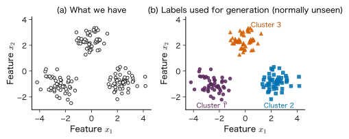
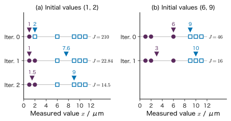

Chapter 17Clustering, Mixture Distributions, and the EM Algorithm — Estimating Unseen Labels
- When we divide data that carry no labels (correct answers) into groups of “similar items,” what is the computer actually minimizing or maximizing?
- We automatically separated the X-ray diffraction patterns of samples whose composition was changed little by little, and obtained three groups. Can we say that these three groups are three “phases”?
- The EM algorithm estimates unseen labels and unknown parameters at the same time. Why does it avoid lowering the likelihood at every iteration, and when does it break down?
In the previous chapters we learned from pairs of an input $\bm{x}$ and a correct answer $y$. In materials research, however, data without correct answers are far more common. Even if we measure 100 X-ray diffraction patterns on a thin film whose composition is varied continuously (a composition-gradient sample), no one tells us which phase each point belongs to. When we measure the sizes of several hundred grains with a scanning electron microscope (SEM), the distribution appears to have two peaks, but no grain carries a tag saying whether it is an “abnormally grown grain.” For such data, the task of “gathering the items that belong together” is called clustering.
In this chapter we first build the simplest method, k-means (a method that assigns each point to its nearest representative point), starting from the quantity $J$ that it minimizes. Next we introduce the Gaussian mixture model, which regards the data as “generated from one of several Gaussian distributions,” and treat the unseen label telling which distribution generated a point as a latent variable. We obtain, for each point, the responsibility, which expresses “how much each component takes charge of it,” by Bayes's theorem, and derive the EM algorithm, which alternately updates the responsibilities and the parameters, from the derivative of the log-likelihood. We follow one iteration through a hand calculation with four points, and show why the likelihood always increases by means of the decomposition into the ELBO and the KL divergence. In the second half we treat pitfalls such as dependence on initial values, degeneracy of the covariance, and label switching of the components; the fact that k-means is a limit of the Gaussian mixture; and how to choose the number of components. Finally, we return to the question “is a cluster a phase?” through the clustering of diffraction patterns.
- Write the objective function $J$ of k-means, and prove that neither the assignment step nor the mean update increases $J$. Carry out k-means by hand on a small one-dimensional data set.
- Explain the Gaussian mixture model as a generative process with a latent variable $\bm{z}$, and show that marginalization yields the mixture distribution.
- Derive the responsibility $\gamma_{nk}$ from Bayes's theorem, and compute it numerically.
- Differentiate the log-likelihood to derive the update formulas for $\bm{\mu}_k$, $\bm{\Sigma}_k$, and $\pi_k$ (for $\pi_k$, by the method of Lagrange multipliers). Carry out the E step and the M step once each by hand.
- Derive the decomposition of the log-likelihood $\ln p(\bm{X}\mid\bm{\theta})=\ELBO+\KL$, and explain why the log-likelihood does not decrease under the EM algorithm.
- Explain dependence on initial values, degeneracy of the covariance (divergence of the likelihood), and label switching of the components with numerical examples, and list remedies.
- Show that k-means is the limit of a Gaussian mixture that is “isotropic with variance approaching 0,” and state the implicit assumptions of k-means.
- Choose the number of components by BIC, and explain why we cannot say “cluster = phase” in the clustering of diffraction patterns.
Sections for the introductory route: this chapter belongs to the detailed route. On the introductory route, read only 17.13 (Summary). The chapter to read next on the introductory route is Chapter 22.
17.1 What Is Clustering? — A Task Without a Correct AnswerDetailed Route
17.1.1 What we want to do
Figure 17.1(a) shows 150 points for which two features $x_1,x_2$ were measured. At a glance there seem to be three clumps. In fact, this data was made by drawing 50 points each from three Gaussian distributions (panel (b) of the same figure). With real data, however, we do not have the labels of (b) at hand. All we have is (a).

The goal of clustering is to find a partition like the one in (b) from (a) alone. This corresponds to “latent representation” among the five tasks of Chapter 1, Section 1.2, and within it to the case where the partition is discrete (continuous low-dimensional representations are treated in the next chapter, Chapter 18). Since there are no correct labels, in the classification of Chapter 1, Section 1.3 this falls under unsupervised learning.
That there is no correct answer means that we cannot decide “which partition is right” from the data alone. We must decide for ourselves what to regard as “similar,” how many groups to form, and what shape we expect the clumps to have. Every method in this chapter writes down that decision as a quantity to be minimized (or maximized). Once we know what is being optimized, we also know what the method assumes and where it fails.
17.1.2 Measuring “similar” by distance
The most commonly used measure of “similar” is the Euclidean distance $\norm{\bm{x}-\bm{x}'}=\sqrt{\sum_{i=1}^{D}(x_i-x'_i)^{2}}$ (where $\bm{x},\bm{x}'\in\R^{D}$ are the feature vectors of two points). This distance is simple, but it depends strongly on the units and scales of the features. If quantities with different units (such as μm and HV) are simply placed side by side, the distance is determined by the quantity with the larger numerical values alone. Standardization, in which we subtract the mean over the whole data from each feature and divide by the standard deviation, is the simplest way to remove this bias (in Chapter 7, Section 7.3 we performed the same operation to speed up optimization). In addition, when we want to compare shapes rather than overall intensity, as with spectra, we use the closeness of the directions of the vectors (cosine similarity) (Section 17.11).
Example 17.1: Standardization changes the “most similar sample”
The mean grain size and the Vickers hardness of three sintered bodies were measured (a numerical example for teaching purposes). Sample A: $(2.0\ \mu\mathrm{m},\ 1600\ \mathrm{HV})$, sample B: $(2.2\ \mu\mathrm{m},\ 1450\ \mathrm{HV})$, sample C: $(5.0\ \mu\mathrm{m},\ 1590\ \mathrm{HV})$. (1) With the Euclidean distance using the units as they are, which of B and C is closer to A? (2) What happens if we measure the distance after dividing each quantity by the standard deviation estimated from many samples (grain size $1.5\ \mu\mathrm{m}$, hardness $120\ \mathrm{HV}$)?
Solution. (1) The difference between A and B is $(0.2,\,-150)$, and the difference between A and C is $(3.0,\,-10)$ (the numbers are given with the units removed).
$$ \begin{aligned} d_{\mathrm{AB}}&=\sqrt{0.2^{2}+150^{2}}=\sqrt{22500.04}\approx150.0,\\ d_{\mathrm{AC}}&=\sqrt{3.0^{2}+10^{2}}=\sqrt{109}\approx10.44 . \end{aligned} $$C is closer. But this is merely because the numerical values of the hardness are large; the fact that the grain sizes differ by a factor of 2.5 has hardly any effect.
(2) Dividing the differences by the standard deviations, A–B becomes $(0.2/1.5,\,-150/120)=(0.133,\,-1.25)$ and A–C becomes $(3.0/1.5,\,-10/120)=(2.0,\,-0.0833)$.
This time B is closer. “Which is more similar” was decided not by the data but by how we chose the scale. Standardization is also just one choice; if we want to weight differences in grain size more heavily than differences in hardness, we may use other weights. What matters is to be conscious of that choice and to write it down.
17.2 k-means — Assigning Each Point to the Nearest MeanDetailed Route
17.2.1 The objective function
We divide the data $\bm{x}_1,\dots,\bm{x}_N\in\R^{D}$ into $K$ groups (clusters). Let $\bm{\mu}_k\in\R^{D}$ be the representative point of cluster $k$ ($k=1,\dots,K$), and let a number $r_{nk}$ equal to 0 or 1 express which cluster point $n$ is put into. If $r_{nk}=1$, point $n$ belongs to cluster $k$, and for each $n$ exactly one $k$ has $r_{nk}=1$ ($\sum_k r_{nk}=1$). Each row of the $N\times K$ matrix obtained by arranging $r_{nk}$ with $n$ as the row and $k$ as the column is a one-hot vector, as used in Chapter 9.
Definition 17.1: The k-means objective function
For the assignments $\{r_{nk}\}$ and the representative points $\{\bm{\mu}_k\}$, the method of finding the $\{r_{nk}\}$ and $\{\bm{\mu}_k\}$ that minimize
\begin{equation} \begin{aligned} J&=\sum_{n=1}^{N}\sum_{k=1}^{K}r_{nk}\\ &\qquad\times\norm{\bm{x}_n-\bm{\mu}_k}^{2} \end{aligned} \label{eq:17-J} \end{equation}is called k-means (the k-means algorithm). $J$ is the sum of “the squared distance from each point to the representative point of the cluster to which it belongs.” If $\bm{x}$ has units, the unit of $J$ is the square of that unit.
Optimizing $r_{nk}$ and $\bm{\mu}_k$ simultaneously is difficult (there are $K^{N}$ possible choices of $r_{nk}$). So we alternate between fixing one and optimizing the other.
- Assignment (corresponding to the E step): Fix $\bm{\mu}_k$ and put each point into the cluster of the nearest representative point. \begin{equation} r_{nk}=\begin{cases}1 & (k=k_n^{*})\\ 0 & (k\ne k_n^{*})\end{cases} \label{eq:17-assign} \end{equation} Here $k_n^{*}=\argmin_{j}\norm{\bm{x}_n-\bm{\mu}_j}^{2}$ is the index of the representative point nearest to point $n$.
- Update of the means (corresponding to the M step): Fix $r_{nk}$ and make each representative point the mean of the points of its cluster. \begin{equation} \bm{\mu}_k=\frac{\sum_{n}r_{nk}\bm{x}_n}{\sum_{n}r_{nk}} \label{eq:17-kmean} \end{equation}
- Stop when the assignments no longer change.
This procedure is the same as the method shown by Lloyd (1982) in the context of signal quantization, and is also called Lloyd's algorithm. The names E and M correspond to the two steps of the EM algorithm in Section 17.5 (in Section 17.9 we show that this correspondence holds not as a metaphor but as a limit).
17.2.2 Neither step increases $J$
Theorem 17.1: Monotonicity of k-means
Whether we perform the assignment \eqref{eq:17-assign} or the update of the means \eqref{eq:17-kmean}, $J$ does not increase. Therefore k-means stops after a finite number of iterations.
Proof
Assignment. When $\bm{\mu}_k$ is fixed, $J$ splits into a sum of per-point terms $J=\sum_n J_n$, $J_n=\sum_k r_{nk}\norm{\bm{x}_n-\bm{\mu}_k}^{2}$. $J_n$ is determined only by the assignment of point $n$, and since exactly one of the $r_{nk}$ equals 1, $J_n$ equals “the squared distance to the representative point of the chosen cluster.” The choice that makes this smallest is the nearest representative point, and that is \eqref{eq:17-assign}. Since each $J_n$ becomes less than or equal to its previous value, the sum $J$ also becomes less than or equal to its previous value.
Update of the means. When the assignments are fixed, $J$ splits into a sum over clusters $J=\sum_k\sum_{n\in C_k}\norm{\bm{x}_n-\bm{\mu}_k}^{2}$. Here $C_k$ is the set of indices of the points that went into cluster $k$, $N_k=\sum_n r_{nk}$ is the number of those points, and $\bar{\bm{x}}_k=\frac{1}{N_k}\sum_{n\in C_k}\bm{x}_n$ is their mean (we suppose $N_k\ge1$). Splitting each point as $\bm{x}_n-\bm{\mu}_k=(\bm{x}_n-\bar{\bm{x}}_k)+(\bar{\bm{x}}_k-\bm{\mu}_k)$ and expanding the square, we obtain
$$ \begin{aligned} &\sum_{n\in C_k}\norm{\bm{x}_n-\bm{\mu}_k}^{2}\\ &=\sum_{n\in C_k}\norm{\bm{x}_n-\bar{\bm{x}}_k}^{2}\\ &\quad+2(\bar{\bm{x}}_k-\bm{\mu}_k)^{\tp}\!\!\sum_{n\in C_k}\!(\bm{x}_n-\bar{\bm{x}}_k)\\ &\quad+N_k\norm{\bar{\bm{x}}_k-\bm{\mu}_k}^{2}. \end{aligned} $$The sum in the second line vanishes because $\sum_{n\in C_k}\bm{x}_n-N_k\bar{\bm{x}}_k=\bm{0}$. The first line does not depend on $\bm{\mu}_k$, and the third line is at least 0 and equals 0 only when $\bm{\mu}_k=\bar{\bm{x}}_k$. Therefore $\bm{\mu}_k=\bar{\bm{x}}_k$, that is, \eqref{eq:17-kmean}, minimizes the term of this cluster. Since the term of every cluster becomes less than or equal to its previous value, $J$ does not increase.
Stopping after finitely many steps. The number of possible assignments is at most $K^{N}$, which is finite. If we fix how ties are broken, then in any iteration in which the assignments change, $J$ strictly decreases, so the same assignment never recurs. Therefore after a finite number of iterations the assignments stop changing.
∎
All this proof guarantees is that “$J$ keeps decreasing and stops.” There is no guarantee that the point where it stops is the minimum of $J$ (the global optimum). The point where it stops is one at which $J$ does not decrease whether we change the assignments or move the means, that is, a local optimum.
17.2.3 A hand calculation with six points in one dimension
Example 17.2: Carrying out two iterations of k-means by hand
The diameters of six grains were measured, giving $x=1,\ 2,\ 6,\ 9,\ 10,\ 11\ \mu\mathrm{m}$ (a numerical example for teaching purposes). Run k-means with $K=2$ and initial representative points $\mu_1=1$, $\mu_2=2$ (unit μm; omitted below), and find $J$ at each stage.
Solution. Assignment at iteration 0: Compare the distance of each point from $\mu_1=1$ and $\mu_2=2$. Only $x=1$ is close to $\mu_1$ (distances 0 and 1), and all points from $x=2$ on are closer to $\mu_2$. Cluster 1 is $\{1\}$ and cluster 2 is $\{2,6,9,10,11\}$, so
$$ \begin{aligned} J&=0^{2}+\bigl(0^{2}+4^{2}+7^{2}+8^{2}+9^{2}\bigr)\\ &=0+(0+16+49+64+81)=210 . \end{aligned} $$Update of the means: $\mu_1=1$, $\mu_2=(2+6+9+10+11)/5=38/5=7.6$. Then
$$ \begin{aligned} J&=0+(5.6^{2}+1.6^{2}+1.4^{2}+2.4^{2}+3.4^{2})\\ &=31.36+2.56+1.96+5.76+11.56\\ &=53.2 \end{aligned} $$which is down from 210.
Assignment at iteration 1: For $x=2$, the distance is 1 to $\mu_1=1$ and 5.6 to $\mu_2=7.6$, so it moves to cluster 1. For $x=6$, the distances are 5 and 1.6, so it stays in cluster 2. Cluster 1 is $\{1,2\}$ and cluster 2 is $\{6,9,10,11\}$, and $J=(0+1)$ $+(1.6^{2}+1.4^{2}+2.4^{2}+3.4^{2})$ $=1+21.84=22.84$.
Update of the means: $\mu_1=(1+2)/2=1.5$, $\mu_2=(6+9+10+11)/4=36/4=9$. $J=(0.5^{2}+0.5^{2})$ $+(3^{2}+0^{2}+1^{2}+2^{2})$ $=0.5+14=14.5$.
Assignment at iteration 2: For $x=6$, the distance is 4.5 to $\mu_1=1.5$ and 3 to $\mu_2=9$, so it stays in cluster 2. The other points do not change either. Since the assignments do not change, the algorithm stops. The final result is $\{1,2\}$ and $\{6,9,10,11\}$, $\mu=(1.5,\,9)$, $J=14.5\ \mu\mathrm{m}^{2}$. $J$ decreased monotonically as $210\to53.2\to22.84\to14.5$ (Theorem 17.1).

17.2.4 Dependence on initial values
Even for the same data, changing the initial values can make the algorithm stop at a different answer (Figure 17.2(b)).
Example 17.3: Starting from different initial values
For the data of Example 17.2, if we take the initial representative points to be $\mu_1=6$, $\mu_2=9$, where does k-means stop? Compare the resulting $J$ with that of Example 17.2, and determine which one is the minimum of $J$.
Solution. Assignment: The points $x=1,2,6$ are closer to 6, and the points $x=9,10,11$ are closer to 9 ($x=6$ is at distance 0 from 6 and 3 from 9). $J=(5^{2}+4^{2}+0^{2})$ $+(0^{2}+1^{2}+2^{2})$ $=41+5=46$. Update: $\mu_1=(1+2+6)/3=3$, $\mu_2=(9+10+11)/3=10$. Assignment: $x=6$ is at distance 3 from 3 and 4 from 10, so it stays in cluster 1. Nothing changes, so the algorithm stops. $J=(2^{2}+1^{2}+3^{2})$ $+(1^{2}+0^{2}+1^{2})$ $=14+2=16$.
In one dimension with $K=2$, the optimal partition is one of the splits into “the $s$ smallest points and the rest” (a partition that has points of another cluster between them always has its $J$ decreased by swapping). Computing $J$ (the total of the sums of squares around the mean of each cluster) for the five cases $s=1,\dots,5$ gives: $s=1$: $0+53.2=53.2$; $s=2$: $0.5+14=14.5$; $s=3$: $14+2=16$; $s=4$: $41$ around the mean 4.5 and $0.5$ around the mean 10.5, for a total of $41.5$; $s=5$: $65.2$ around the mean 5.6, for a total of $65.2$. The minimum is $J=14.5$ at $s=2$, so the answer of Example 17.2 is the global optimum, and the answer with $J=16$ is a local optimum. In the state with $J=16$, $J$ does not decrease even if we move $x=6$ to cluster 2 or move the means slightly. Simply alternating the two steps cannot escape from this state.
In practice, the following remedies are taken.
- Run the algorithm many times with different initial values and adopt the result with the smallest $J$. Also record how the initial values were chosen (the random-number seed).
- k-means++ (Arthur & Vassilvitskii 2007): choose the first representative point at random from the data, and choose each subsequent one from the data points with probability proportional to “the squared distance from the representative points already chosen.” The initial values tend to be far apart from one another, and it has been shown that the expectation (expected value) of the resulting $J$ is within a factor $O(\ln K)$ of the optimal value.
17.2.5 How to choose $K$
As we increase $K$, the minimum of $J$ keeps decreasing, and it becomes 0 at $K=N$ (each point forms a cluster by itself) (Exercise 17.7). Therefore we cannot choose “the $K$ that minimizes $J$.” A commonly used rule of thumb is to choose the point where the decrease in $J$ when $K$ is increased by one suddenly becomes small (the “elbow”). In Figure 17.3(b), the minimum of $J$ drops greatly at $K=1,2,3$ to $1065.4,\ 511.4,\ 100.1$, and becomes slow at $K=4,5$ with $82.2,\ 70.1$. The elbow is at $K=3$. However, there are also many data sets for which the elbow is not clear. If we use a probabilistic model, a choice with somewhat more justification becomes possible, such as the BIC of Section 17.10.
![The left panel is a local minimum obtained by applying k-means with K=3 to the same points as in Figure 17.1, in which the two lower clumps are merged into one cluster and the upper clump is split in two. J is 683.2. The right panel has the number of components K on the horizontal axis and the objective function J on the vertical axis, showing the results of 20 initial values as open circles and their minimum connected by a solid line. The minimum of J drops sharply at K=3 and decreases slowly afterward.](figs/ch17_fig17-3.svg)
17.3 The Gaussian Mixture Model — A Generative Process with Unseen LabelsDetailed Route
17.3.1 From the limitations of k-means to a probabilistic model
The k-means algorithm is convenient, but it falls short in two respects. First, it forces each point into exactly one cluster. Even a point on the boundary between two blobs is assigned flatly to one of them. Second, the distance $\norm{\bm{x}-\bm{\mu}_k}$ gives the same weight to every direction, so it cannot represent elongated blobs or blobs of different sizes (we show why in Section 17.9).
So we write down, as a probabilistic model, how the data were generated, and let the model answer in terms of probability the question “which blob does this point seem to come from?” The most basic such model is the Gaussian mixture model (GMM).
17.3.2 A generative process using latent variables
To each data point $\bm{x}_n\in\R^{D}$ we attach a variable $\bm{z}_n\in\{0,1\}^{K}$ that records which component it was generated from. $\bm{z}_n$ is a one-hot vector: if the point came from component $k$, only the $k$th entry $z_{nk}$ equals 1. Since $\bm{z}_n$ cannot be observed, we call it a latent variable.
Notation: $\bm{z}$ and $\pi$ in this chapter
In Chapters 14 and 15 we used $\bm{z}^{(l)}$ for the output of a hidden layer of a neural network, but in this chapter $\bm{z}_n$ is a latent variable (a one-hot vector recording which component the point came from). Also, $\pi_k$ is a mixing coefficient and is a different thing from the circle constant $\pi$ (which appears, for example, in $\ln 2\pi$). The circle constant is written without a subscript.
The generative procedure is as follows (Figure 17.4).
- Choose the index of a component with probabilities $\pi_1,\dots,\pi_K$: $p(z_{nk}=1)=\pi_k$. We call $\pi_k$ the mixing coefficient; it satisfies $0\le\pi_k\le1$ and $\sum_{k=1}^{K}\pi_k=1$. This is the categorical distribution of Chapter 3, Section 3.3.
- Draw a point from the Gaussian distribution of the chosen component $k$: $p(\bm{x}_n\mid z_{nk}=1)=\Normal(\bm{x}_n\mid\bm{\mu}_k,\bm{\Sigma}_k)$. Here $\bm{\mu}_k\in\R^{D}$ is the mean of component $k$, and $\bm{\Sigma}_k\in\R^{D\times D}$ is its covariance matrix (symmetric and positive definite).
We now express this two-step procedure in equations. The distribution of $\bm{z}_n$, and the distribution of $\bm{x}_n$ given $\bm{z}_n$, can be written compactly in exponent form by using the one-hot property.
$$ p(\bm{z}_n)=\prod_{k=1}^{K}\pi_k^{z_{nk}}, $$ $$ p(\bm{x}_n\mid\bm{z}_n)=\prod_{k=1}^{K}\Normal(\bm{x}_n\mid\bm{\mu}_k,\bm{\Sigma}_k)^{z_{nk}} $$(Only the factor for the $k$ with $z_{nk}=1$ survives; all the others are raised to the power 0 and become 1.) By the product rule (Chapter 2, Section 2.2), the joint distribution is
\begin{equation} \begin{aligned} &p(\bm{x}_n,\bm{z}_n)\\ &=p(\bm{z}_n)\,p(\bm{x}_n\mid\bm{z}_n)\\ &=\prod_{k=1}^{K}\bigl[\pi_k\,\Normal(\bm{x}_n\mid\bm{\mu}_k,\bm{\Sigma}_k)\bigr]^{z_{nk}} \end{aligned} \label{eq:17-joint} \end{equation}The distribution of $\bm{x}_n$ alone is obtained by summing over $\bm{z}_n$ with the sum rule (that is, by marginalizing). Since $\bm{z}_n$ can take exactly $K$ values, “only the $k$th entry equals 1,”
Definition 17.2: Gaussian mixture model
The distribution of $\bm{x}$ obtained by marginalizing out $\bm{z}$, $p(\bm{x})=\sum_{k}\pi_k\,\Normal(\bm{x}\mid\bm{\mu}_k,\bm{\Sigma}_k)$ (Eq. \eqref{eq:17-gmm} below), is called a Gaussian mixture model (mixture distribution). Its parameters are $\bm{\theta}=\{\pi_k,\bm{\mu}_k,\bm{\Sigma}_k\}_{k=1}^{K}$. Each $\Normal(\bm{x}\mid\bm{\mu}_k,\bm{\Sigma}_k)$ is called a component.
Each term on the right-hand side is positive, and integrating gives $\sum_k\pi_k\times1=1$, so Eq. \eqref{eq:17-gmm} is indeed a probability density. If we use enough components, a Gaussian mixture can approximate most smooth densities as closely as we like. In other words, a Gaussian mixture is both a tool for "dividing data into blobs" and a tool for estimating a density of no prescribed shape (the "density estimation" among the five tasks of Chapter 1). A graphical representation of the same model (plate notation) is given in Chapter 19, Section 19.4.
Example 17.4: Values of a one-dimensional mixture density
Consider a one-dimensional ($D=1$) Gaussian mixture with $K=2$, $\pi_1=\pi_2=\tfrac12$, $\mu_1=0$, $\mu_2=4$, and $\sigma_1^{2}=\sigma_2^{2}=2$ (the setting we keep using in Sections 17.4–17.8). (1) Find the density $p(x)$ at $x=0$ and at $x=2$. (2) When one point is drawn from this distribution, find the probability that it comes from component 2, and the probability that $x\gt4$ given that it came from component 2.
Solution. The one-dimensional Gaussian distribution is $\Normal(x\mid\mu,\sigma^{2})=\dfrac{1}{\sqrt{2\pi\sigma^{2}}}\exp\!\left[-\dfrac{(x-\mu)^{2}}{2\sigma^{2}}\right]$; for $\sigma^{2}=2$ the leading coefficient is $1/\sqrt{4\pi}=0.28209$ and the exponent is $-(x-\mu)^{2}/4$.
(1) $x=0$: $\Normal(0\mid0,2)=0.28209$, $\Normal(0\mid4,2)=0.28209\,e^{-4}=0.0051667$.
$x=2$: the distance from the mean of either component is 2, so $\Normal(2\mid0,2)=\Normal(2\mid4,2)$ $=0.28209\,e^{-1}=0.10378$. Then $p(2)=\tfrac12(0.10378+0.10378)=0.10378$.
(2) The probability that the point comes from component 2 is $\pi_2=\tfrac12$ (the probability before looking at the point). The distribution of component 2 is symmetric about $x=4$, so $P(x\gt4\mid z_2=1)=\tfrac12$. How the probabilities of the components change after we see the point is described by the responsibilities of the next section.
17.4 Responsibilities — Which Component Takes Charge of a PointDetailed Route
When we observe a point $\bm{x}$, consider the probability $p(z_k=1\mid\bm{x})$ that it was generated by component $k$. The prior probability is $p(z_k=1)=\pi_k$, and the density of $\bm{x}$ under component $k$ is $\Normal(\bm{x}\mid\bm{\mu}_k,\bm{\Sigma}_k)$, so Bayes's theorem (Chapter 2, Section 2.4) applies directly.
Definition 17.3: Responsibility
Given the parameters $\bm{\theta}$, the posterior probability $\gamma_{nk}\equiv p(z_{nk}=1\mid\bm{x}_n,\bm{\theta})$ that the point $\bm{x}_n$ was generated by component $k$ (Eq. \eqref{eq:17-resp} below) is called the responsibility of component $k$ for point $n$. For each $n$, $0\le\gamma_{nk}\le1$ and $\sum_k\gamma_{nk}=1$.
The derivation takes one line: the numerator is the joint probability $p(z_{nk}=1,\bm{x}_n)=p(z_{nk}=1)\,p(\bm{x}_n\mid z_{nk}=1)$ given by the product rule, and the denominator is the marginal probability $p(\bm{x}_n)$ obtained by summing it over $k$ (Eq. \eqref{eq:17-gmm}). The responsibility can be regarded as the 0-or-1 assignment $r_{nk}$ of k-means extended to values between 0 and 1 (a “soft assignment”).
When the labels are visible, the same formula was precisely generative classification (Chapter 9, Section 9.2), which obtains the posterior probability from the distribution of each class. The responsibility of a Gaussian mixture is the same computation carried out with “the current estimates of the parameters,” while the labels remain invisible.
Example 17.5: Responsibilities of four points
In the setting of Example 17.4 ($\pi_1=\pi_2=\tfrac12$, $\mu_1=0$, $\mu_2=4$, $\sigma_1^{2}=\sigma_2^{2}=2$), find the responsibility $\gamma_{n1}$ of each of the four points $x=0,\ 2,\ 3,\ 7$. Also determine what kind of function of $x$ the responsibility is.
Solution. Since $\pi_1=\pi_2$ and $\sigma_1=\sigma_2$, the factor $\pi_k$ and the leading coefficient $1/\sqrt{4\pi}$ cancel between the numerator and the denominator of Eq. \eqref{eq:17-resp}, leaving only the exponentials. Dividing the numerator and the denominator by $\exp[-x^{2}/4]$ gives
$$ \begin{aligned} \gamma_{1}(x)&=\frac{e^{-x^{2}/4}}{e^{-x^{2}/4}+e^{-(x-4)^{2}/4}}\\ &=\frac{1}{1+e^{\,[x^{2}-(x-4)^{2}]/4}}\\ &=\frac{1}{1+e^{\,2x-4}} . \end{aligned} $$(We used $x^{2}-(x-4)^{2}=8x-16$.) This is the logistic sigmoid function $\sigma(a)=1/(1+e^{-a})$ with $a=4-2x$ substituted, that is, $\gamma_1(x)=\sigma(4-2x)$. For the four points, we obtain
| $x_n$ | $a=4-2x_n$ | $\gamma_{n1}=1/(1+e^{-a})$ | $\gamma_{n2}=1-\gamma_{n1}$ |
|---|---|---|---|
| 0 | 4 | 0.98201 | 0.01799 |
| 2 | 0 | 0.50000 | 0.50000 |
| 3 | −2 | 0.11920 | 0.88080 |
| 7 | −10 | 0.0000454 | 0.9999546 |
At $x=2$, exactly midway between the two means, the split is fifty-fifty, and even at $x=3$, on the side of the mean 4, the responsibility of component 1 is not 0 but remains 0.119. Because the variances are equal and the mixing coefficients are equal, the boundary lies at the midpoint of the two means, and the responsibility is a sigmoid of a linear function of $x$. If the variances differ between components, the $x^{2}$ terms in the exponent do not cancel, and the responsibility becomes a sigmoid of a quadratic function (Exercise 17.4).
![The left panel shows the density of a one-dimensional Gaussian mixture: a solid curve for the total density with peaks at 0 and 4, and the two components drawn as a dashed curve and a dash-dotted curve. Four points 0, 2, 3, and 7 are marked with diamonds above the x axis. The right panel shows the responsibilities: the responsibility of component 1 falls from 1 to 0 in a sigmoid shape centered at x=2, and the responsibility of component 2 rises correspondingly. The responsibilities of component 1 for the four points, 0.982, 0.500, 0.119, and 4.5×10 to the power of minus 5, are written in.](figs/ch17_fig17-5.svg)
Math Tool: Computing responsibilities with log-sum-exp
When the dimension $D$ is large, $\Normal(\bm{x}_n\mid\bm{\mu}_k,\bm{\Sigma}_k)$ can become smaller than $10^{-300}$ and be rounded to 0. We therefore compute $\ell_{nk}=\ln\pi_k+\ln\Normal(\bm{x}_n\mid\bm{\mu}_k,\bm{\Sigma}_k)$, set $m_n=\max_k\ell_{nk}$, and compute
$$ \ln\sum_{j}e^{\ell_{nj}}=m_n+\ln\sum_{j}e^{\ell_{nj}-m_n}, $$ $$ \gamma_{nk}=\exp\Bigl(\ell_{nk}-\ln\sum_{j}e^{\ell_{nj}}\Bigr) $$(log-sum-exp; the same device as the softmax in Chapter 9, Section 9.5). The quantities $\ln\abs{\bm{\Sigma}_k}$ and $(\bm{x}-\bm{\mu}_k)^{\tp}\bm{\Sigma}_k^{-1}(\bm{x}-\bm{\mu}_k)$ needed for $\ln\Normal$ are obtained from the Cholesky decomposition $\bm{\Sigma}_k=\bm{L}\bm{L}^{\tp}$ of $\bm{\Sigma}_k$: $\ln\abs{\bm{\Sigma}_k}=2\sum_i\ln L_{ii}$, and the value $\norm{\bm{v}}^{2}$ obtained after solving $\bm{L}\bm{v}=\bm{x}-\bm{\mu}_k$ (no inverse matrix is formed).
17.5 The EM Algorithm — Alternately Updating Responsibilities and ParametersDetailed Route
17.5.1 The log-likelihood
Suppose the data $\bm{X}=\{\bm{x}_1,\dots,\bm{x}_N\}$ (which may also be viewed as an $N\times D$ matrix) were generated independently from the Gaussian mixture \eqref{eq:17-gmm}. Then the log-likelihood is
\begin{equation} \begin{aligned} &\ln p(\bm{X}\mid\bm{\theta})\\ &\ =\sum_{n=1}^{N}\ln\biggl[\sum_{k=1}^{K}\pi_k\\ &\qquad\quad\times\Normal(\bm{x}_n\mid\bm{\mu}_k,\bm{\Sigma}_k)\biggr] \end{aligned} \label{eq:17-loglik} \end{equation}We want to maximize this with respect to $\bm{\theta}$ (maximum likelihood estimation; Chapter 4, Section 4.2). For a single Gaussian distribution, $\ln$ cancels $\exp$ and leaves a quadratic expression, so the mean and the variance were obtained in closed form. For a mixture, there is a sum inside the $\ln$, so this does not work. Even so, we can write down the equations obtained by differentiating and setting the result to 0, and their form suggests how to compute the solution.
17.5.2 The update formula for the mean
Derivation: The stationarity condition for $\bm{\mu}_k$
Differentiate Eq. \eqref{eq:17-loglik} with respect to $\bm{\mu}_k$. The only part containing $\bm{\mu}_k$ is the $k$th term inside $\ln[\cdots]$ for each $n$. Using the chain rule and $\partial f/\partial\bm{\mu}=f\,\partial\ln f/\partial\bm{\mu}$ ($f\gt0$), we obtain
$$ \begin{aligned} &\pdiff{\ln p(\bm{X}\mid\bm{\theta})}{\bm{\mu}_k}\\ &=\sum_{n=1}^{N}\frac{\pi_k\,\pdiff{}{\bm{\mu}_k}\Normal(\bm{x}_n\mid\bm{\mu}_k,\bm{\Sigma}_k)}{\sum_{j}\pi_j\,\Normal(\bm{x}_n\mid\bm{\mu}_j,\bm{\Sigma}_j)}\\ &=\sum_{n=1}^{N}\underbrace{\frac{\pi_k\,\Normal(\bm{x}_n\mid\bm{\mu}_k,\bm{\Sigma}_k)}{\sum_{j}\pi_j\,\Normal(\bm{x}_n\mid\bm{\mu}_j,\bm{\Sigma}_j)}}_{\gamma_{nk}}\\ &\qquad\times\pdiff{\ln\Normal(\bm{x}_n\mid\bm{\mu}_k,\bm{\Sigma}_k)}{\bm{\mu}_k}. \end{aligned} $$Here the responsibility \eqref{eq:17-resp} appears naturally. The logarithm of the multivariate Gaussian distribution (Chapter 3, Section 3.6) is
$$ \begin{aligned} \ln\Normal(\bm{x}\mid\bm{\mu},\bm{\Sigma})&=-\frac{D}{2}\ln2\pi-\frac12\ln\abs{\bm{\Sigma}}\\ &\quad-\frac12(\bm{x}-\bm{\mu})^{\tp}\bm{\Sigma}^{-1}(\bm{x}-\bm{\mu}) \end{aligned} $$For a symmetric matrix $\bm{A}$, $\pdiff{}{\bm{\mu}}\bigl[(\bm{x}-\bm{\mu})^{\tp}\bm{A}(\bm{x}-\bm{\mu})\bigr]=-2\bm{A}(\bm{x}-\bm{\mu})$ (in components: differentiating $\sum_{ij}(x_i-\mu_i)A_{ij}(x_j-\mu_j)$ with respect to $\mu_l$ gives $-2\sum_jA_{lj}(x_j-\mu_j)$), so $\pdiff{\ln\Normal}{\bm{\mu}}=\bm{\Sigma}^{-1}(\bm{x}-\bm{\mu})$. Therefore the stationarity condition is
$$ \sum_{n=1}^{N}\gamma_{nk}\,\bm{\Sigma}_k^{-1}(\bm{x}_n-\bm{\mu}_k)=\bm{0}. $$Multiply from the left by $\bm{\Sigma}_k$, and solve $\sum_n\gamma_{nk}\bm{x}_n=\bigl(\sum_n\gamma_{nk}\bigr)\bm{\mu}_k$ for $\bm{\mu}_k$.
∎
Writing the “effective number of points” for which component $k$ is responsible as
\begin{equation} N_k\equiv\sum_{n=1}^{N}\gamma_{nk} \label{eq:17-Nk} \end{equation}(so that $\sum_kN_k=N$), the result is
\begin{equation} \bm{\mu}_k=\frac{1}{N_k}\sum_{n=1}^{N}\gamma_{nk}\,\bm{x}_n \label{eq:17-mu} \end{equation}This is a weighted average with the responsibilities as weights, and replacing $\gamma_{nk}$ by $r_{nk}$, which is 0 or 1, gives Eq. \eqref{eq:17-kmean} of k-means.
17.5.3 The update formula for the covariance matrix
Differentiating with respect to $\bm{\Sigma}_k$ requires two matrix-derivative formulas. To simplify the computation, we differentiate with respect to the inverse of the covariance matrix (the precision matrix) $\bm{\Lambda}_k\equiv\bm{\Sigma}_k^{-1}$ (this is a different symbol from the Lagrangian $\Lambda$ of Chapter 7: it is bold and carries a subscript). A stationary point in $\bm{\Lambda}_k$ is also a stationary point in $\bm{\Sigma}_k$.
Math Tool: Derivatives of the log-determinant and the trace
For an invertible $D\times D$ matrix $\bm{A}$ and a constant matrix $\bm{B}$, write $\pdiff{}{\bm{A}}$ for the matrix whose $(i,j)$ component is the derivative with respect to the component $A_{ij}$.
$$ \pdiff{\ln\abs{\bm{A}}}{\bm{A}}=(\bm{A}^{-1})^{\tp},\qquad \pdiff{\tr(\bm{A}\bm{B})}{\bm{A}}=\bm{B}^{\tp}. $$The first: from the cofactor expansion along the $i$th row (University Mathematics, Chapter 8, Section 8.4), $\abs{\bm{A}}=\sum_{j}A_{ij}C_{ij}$ ($C_{ij}$ is a cofactor, which does not contain the components of the $i$th row), we get $\partial\abs{\bm{A}}/\partial A_{ij}=C_{ij}$. Using the formula for the inverse matrix in terms of the adjugate matrix (University Mathematics, Chapter 9, Section 9.1), $(\bm{A}^{-1})_{ji}=C_{ij}/\abs{\bm{A}}$, we get $\partial\ln\abs{\bm{A}}/\partial A_{ij}=C_{ij}/\abs{\bm{A}}=(\bm{A}^{-1})_{ji}$. The second: differentiating $\tr(\bm{A}\bm{B})=\sum_{i}\sum_{j}A_{ij}B_{ji}$ with respect to $A_{ij}$ gives $B_{ji}$. The components of a symmetric matrix are not independent ($A_{ij}=A_{ji}$), but a stationary point found by treating them as independent turns out to be symmetric, and it is the same point as the one found when the symmetry is taken into account.
Derivation: The stationarity condition for $\bm{\Sigma}_k$
Using the fact that a scalar $a$ can be written $a=\tr(a)$, together with $\tr(\bm{u}^{\tp}\bm{A}\bm{u})=\tr(\bm{A}\bm{u}\bm{u}^{\tp})$, and noting that $\abs{\bm{\Sigma}^{-1}}=1/\abs{\bm{\Sigma}}$, we rewrite the logarithm of the Gaussian distribution in terms of $\bm{\Lambda}=\bm{\Sigma}^{-1}$. Let $\bm{d}_{nk}\equiv\bm{x}_n-\bm{\mu}_k$.
$$ \begin{aligned} &\ln\Normal(\bm{x}_n\mid\bm{\mu}_k,\bm{\Lambda}_k^{-1})\\ &=-\frac{D}{2}\ln2\pi+\frac12\ln\abs{\bm{\Lambda}_k}-\frac12\tr\bigl(\bm{\Lambda}_k\,\bm{d}_{nk}\bm{d}_{nk}^{\tp}\bigr). \end{aligned} $$As in Section 17.5.2, $\pdiff{\ln p(\bm{X}\mid\bm{\theta})}{\bm{\Lambda}_k}=\sum_n\gamma_{nk}\pdiff{\ln\Normal(\bm{x}_n\mid\bm{\mu}_k,\bm{\Lambda}_k^{-1})}{\bm{\Lambda}_k}$. From the two formulas above ($\bm{\Lambda}_k$ and $\bm{d}\bm{d}^{\tp}$ are symmetric),
$$ \begin{aligned} \pdiff{\ln\Normal(\bm{x}_n\mid\bm{\mu}_k,\bm{\Lambda}_k^{-1})}{\bm{\Lambda}_k}&=\frac12\bm{\Lambda}_k^{-1}-\frac12\bm{d}_{nk}\bm{d}_{nk}^{\tp}\\ &=\frac12\bm{\Sigma}_k-\frac12\bm{d}_{nk}\bm{d}_{nk}^{\tp}. \end{aligned} $$The stationarity condition is $\sum_n\gamma_{nk}\bigl(\bm{\Sigma}_k-\bm{d}_{nk}\bm{d}_{nk}^{\tp}\bigr)=\bm{O}$, that is, $N_k\bm{\Sigma}_k=\sum_n\gamma_{nk}\bm{d}_{nk}\bm{d}_{nk}^{\tp}$.
∎
This is the covariance matrix weighted by the responsibilities (the maximum likelihood form, with the factor $1/N_k$). For $\bm{\mu}_k$ here, we use the value obtained in \eqref{eq:17-mu}. In one dimension, $\sigma_k^{2}=\frac{1}{N_k}\sum_n\gamma_{nk}(x_n-\mu_k)^{2}$.
17.5.4 The update formula for the mixing coefficients
The $\pi_k$ are subject to the equality constraint $\sum_k\pi_k=1$. Using the method of Lagrange multipliers from Chapter 7, Section 7.7, with multiplier $\nu$, we find the stationary point of
$$ \Lambda(\bm{\pi},\nu)=\ln p(\bm{X}\mid\bm{\theta})+\nu\Bigl(\sum_{k=1}^{K}\pi_k-1\Bigr) $$(this $\Lambda$ is the same Lagrangian as in Chapter 7).
Derivation: The stationarity condition for $\pi_k$
Differentiate with respect to $\pi_k$. Inside $\ln p$, the only part containing $\pi_k$ is the $k$th term of the sum for each $n$, so
$$ \pdiff{\Lambda}{\pi_k}=\sum_{n=1}^{N}\frac{\Normal(\bm{x}_n\mid\bm{\mu}_k,\bm{\Sigma}_k)}{\sum_{j}\pi_j\,\Normal(\bm{x}_n\mid\bm{\mu}_j,\bm{\Sigma}_j)}+\nu=0 . $$Multiplying both sides by $\pi_k$, each term of the sum becomes the responsibility $\gamma_{nk}$.
$$ \sum_{n=1}^{N}\gamma_{nk}+\nu\,\pi_k=0\quad\Longrightarrow\quad N_k=-\nu\,\pi_k . $$Summing this over $k=1,\dots,K$, the left-hand side is $\sum_kN_k=\sum_n\sum_k\gamma_{nk}=N$ and the right-hand side is $-\nu\sum_k\pi_k=-\nu$, so $\nu=-N$. Substituting back into the original equation, we obtain $\pi_k=N_k/N$.
∎
Since $N_k\ge0$, $\pi_k\ge0$ is also satisfied automatically. It is the natural result: “the fraction of points for which component $k$ is responsible.”
17.5.5 Not a closed form — hence we solve alternately
Equations \eqref{eq:17-mu} through \eqref{eq:17-pi} look like solution formulas, but the $\gamma_{nk}$ on the right-hand sides depend on $\bm{\theta}$ itself through \eqref{eq:17-resp}. That is, they are simultaneous equations in $\bm{\theta}$, not the solution itself. So, as in k-means, we repeat the process of “fixing one side and solving for the other.” This is called the EM algorithm (expectation–maximization algorithm). The name is due to Dempster, Laird & Rubin (1977).
Theorem 17.2: The EM algorithm for Gaussian mixtures
- Initialization: Give initial values to $\pi_k$, $\bm{\mu}_k$, and $\bm{\Sigma}_k$, and compute the log-likelihood \eqref{eq:17-loglik}.
- E step (expectation): With the current parameters, compute the responsibilities $\gamma_{nk}$ from \eqref{eq:17-resp}.
- M step (maximization): Fixing $\gamma_{nk}$, compute $N_k$ \eqref{eq:17-Nk}, $\bm{\mu}_k$ \eqref{eq:17-mu}, $\bm{\Sigma}_k$ \eqref{eq:17-sigma} (using the new $\bm{\mu}_k$), and $\pi_k$ \eqref{eq:17-pi}.
- Compute the log-likelihood, and stop if its increase is sufficiently small. Otherwise, return to step 2.
Then the log-likelihood \eqref{eq:17-loglik} does not decrease at any iteration (proved in Section 17.7).
Example 17.6: The EM algorithm with one component
If we apply the EM algorithm to a Gaussian mixture with $K=1$ (an ordinary Gaussian distribution), what do we obtain after one iteration, regardless of the initial values? Find the values for the four one-dimensional points $x=0,2,3,7$.
Solution. For $K=1$, the numerator and the denominator of Eq. \eqref{eq:17-resp} are the same, so $\gamma_{n1}=1$ regardless of the initial values. Therefore $N_1=N$, $\pi_1=1$, $\mu_1=\frac1N\sum_nx_n$ (the sample mean), and $\sigma_1^{2}=\frac1N\sum_n(x_n-\mu_1)^{2}$ (the sample variance, with the factor $1/N$), so a single M step reaches the maximum likelihood estimates of the Gaussian distribution (Chapter 4, Section 4.2). For the four points, $\mu_1=(0+2+3+7)/4=3$ and $\sigma_1^{2}=(9+1+0+16)/4=26/4=6.5$. From the second iteration on, nothing changes. We see that the EM algorithm amounts to repeating the maximum likelihood estimation of a single Gaussian distribution “component by component, weighted by the responsibilities.”
17.5.6 Stepping through the two-dimensional EM algorithm with the simulator
The following simulator applies the EM algorithm for Gaussian mixtures and k-means to two-dimensional data one step at a time, and displays the values of the responsibilities, means, covariances, and log-likelihood. The initial values of the simulator are: “the means are $K$ points chosen at random from the data points; the covariance matrix of every component is $(\tr\bm{S}/2)\bm{I}$, whose diagonal is the average of the variances of the whole data set; and the mixing coefficients are $1/K$” ($\bm{S}$ is the covariance matrix of the whole data set). The simulator handles only two-dimensional data and does not use refinements of the initial values such as k-means++ (Section 17.6 of the text is one-dimensional, but the formulas are the same).
Simulator 17.1: The E step and M step of the EM algorithm
This simulator uses two-dimensional synthetic data for teaching purposes (150 points) to check the responsibilities of the E step and the update of the M step one at a time, and to see that the log-likelihood keeps increasing until convergence.
Open in a separate window at full size →
Operate and Observe
- With the defaults right after opening (method “Gaussian mixture EM,” data “Overlap,” number of components $K=2$, number of data points $N=150$, data seed 20261113, initial-value seed 1), press “E step” once → the responsibilities appear in the readout under “Representative points A, B, C”: point A has $(\gamma_{A1},\gamma_{A2})=(0.214,\,0.786)$, point B, which lies between the two clusters, has $(0.521,\,0.479)$, and point C has $(0.767,\,0.233)$. Check that the sum in each row is 1, and compare with Eq. \eqref{eq:17-resp}. Also look at the fraction for $\gamma_{B1}$ in the “Putting the current numbers into the formula” field.
- Next, press “M step” once → the means and ellipses move, and the readout becomes $N_1=70.344$, $N_2=79.656$, $\pi_1=0.469$, $\pi_2=0.531$, $\bm{\mu}_1=(0.665,\,0.422)$, $\bm{\mu}_2=(-0.821,\,-0.233)$. Check that $\pi_k=N_k/N$ ($70.344/150=0.469$), and compare with Eqs. \eqref{eq:17-mu} and \eqref{eq:17-pi}. The log-likelihood increases from $-483.67$ to $-410.19$.
- Press “Run to convergence” → the log-likelihood in the figure below increases with each iteration, settles at $-400.72$ after 45 iterations, and “converged” is displayed. At this point $\pi=(0.470,\,0.530)$, $\bm{\mu}_1\approx(1.07,\,0.55)$, and $\bm{\mu}_2\approx(-1.19,\,-0.35)$. Compare the fact that it never decreases along the way with Theorem 17.3 in Section 17.7.
Questions After Operating
- After procedure 2, what is $\pi_1+\pi_2$? Why?
Sample answers
$0.469+0.531=1$. Since the responsibilities of each point sum to $\sum_k\gamma_{nk}=1$, we have $\sum_kN_k=\sum_n\sum_k\gamma_{nk}=N$, and therefore $\sum_k\pi_k=\sum_kN_k/N=1$ holds automatically at every iteration ($70.344+79.656=150$).
- Point A is near the center of the left cluster, yet the responsibility of component 1 is small (0.214). This is because component 1 does not represent the “left cluster.” What determined which component takes charge of which cluster?
Sample answers
The initial values did. With the default initial values, the mean of component 1, $(0.995,\,-0.023)$, was placed on the side of the right cluster and the mean of component 2, $(-0.066,\,-0.828)$, was placed toward the left, so the iteration proceeded in the direction in which component 1 takes charge of the right cluster and component 2 takes charge of the left cluster. The component numbers themselves have no meaning, and swapping the numbers leaves the likelihood unchanged (“label switching” in Section 17.8).
17.6 Hand Calculation — One Iteration with One Dimension, Two Components, and Four PointsDetailed Route
We follow one iteration of the EM algorithm with every number written out. The data are four points in one dimension, $x=0,\ 2,\ 3,\ 7$ (dimensionless; a numerical example for teaching purposes), and the initial values are the same as in Examples 17.4 and 17.5: $\pi=(\tfrac12,\tfrac12)$, $\mu=(0,4)$, $\sigma^{2}=(2,2)$. Since the dimension is one, we write the whole data set as $\bm{x}=(x_1,\dots,x_4)^{\tp}$ and the log-likelihood as $\ln p(\bm{x}\mid\bm{\theta})$. Note also that if the iterations of the EM algorithm in this four-point example are continued without stopping, component 2 shrinks until it is responsible only for the outlying point $x=7$, and its variance approaches 0 (it degenerates). In this section we follow only the first iteration; what happens when the iterations are continued is treated in Section 17.8.2.
Example 17.7: One iteration of the EM algorithm
(1) Find the log-likelihood at the initial values. (2) Find the responsibilities in the E step. (3) Find $N_k,\ \mu_k,\ \sigma_k^{2},\ \pi_k$ in the M step. (4) Find the log-likelihood after the update and verify that it has increased.
Solution. (1) We find the density at each point, $p(x_n)=\tfrac12\Normal(x_n\mid0,2)+\tfrac12\Normal(x_n\mid4,2)$. We use $\Normal(x\mid\mu,2)=0.28209\,e^{-(x-\mu)^{2}/4}$.
| $x_n$ | $\tfrac12\Normal(x_n\mid0,2)$ | $\tfrac12\Normal(x_n\mid4,2)$ | $p(x_n)$ | $\ln p(x_n)$ | $\gamma_{n1}$ | $\gamma_{n2}$ |
|---|---|---|---|---|---|---|
| 0 | 0.141047 | 0.002583 | 0.143631 | −1.94051 | 0.98201 | 0.01799 |
| 2 | 0.051888 | 0.051888 | 0.103777 | −2.26551 | 0.50000 | 0.50000 |
| 3 | 0.014866 | 0.109848 | 0.124714 | −2.08173 | 0.11920 | 0.88080 |
| 7 | 0.0000007 | 0.014866 | 0.014867 | −4.20861 | 0.0000454 | 0.99995 |
The log-likelihood is the sum of the four values $\ln p(x_n)$:
$$ \begin{aligned} \ln p(\bm{x}\mid\bm{\theta}^{(0)})&=-1.94051-2.26551\\ &\quad-2.08173-4.20861\\ &=-10.4964 . \end{aligned} $$
(2) The responsibilities are the two right-hand columns of Table 17.2 (the same as in Example 17.5). Each is the value in the second column of that row divided by $p(x_n)$.
(3) $N_1=0.98201+0.5+0.11920+0.0000454$ $=1.60126$, $N_2=4-N_1=2.39874$. The weighted sums are
(Since $\gamma_{n2}=1-\gamma_{n1}$, the two sums add up to $\sum_nx_n=12$.) Therefore
$$ \begin{aligned} \mu_1&=\frac{1.35793}{1.60126}=0.84804,\\ \mu_2&=\frac{10.64207}{2.39874}=4.43653 . \end{aligned} $$The variances are computed around the new means.
$$ \begin{aligned} \sum_n\gamma_{n1}(x_n-\mu_1)^{2}&=0.98201(0.84804)^{2}\\ &\quad+0.5(1.15196)^{2}\\ &\quad+0.11920(2.15196)^{2}\\ &\quad+0.0000454(6.15196)^{2}\\ &=0.70623+0.66351\\ &\quad+0.55202+0.00172\\ &=1.92348,\\ \sum_n\gamma_{n2}(x_n-\mu_2)^{2}&=11.71107 . \end{aligned} $$(The second sum is obtained in the same way by adding four terms.) Hence $\sigma_1^{2}=1.92348/1.60126=1.20123$, $\sigma_2^{2}=11.71107/2.39874=4.88218$, $\pi_1=1.60126/4=0.40032$, $\pi_2=0.59968$.
(4) Computing $\ln p(x_n)$ at each point with the new parameters gives $-2.10012$, $-1.94617$, $-2.21779$, $-2.89608$, and their sum is
The log-likelihood increased by 1.336. Looking point by point, however, $\ln p(x_n)$ at $x=0$ has gone down from $-1.94051$ to $-2.10012$. What the EM algorithm guarantees is that the total sum does not decrease, not that the fit at every point improves.
Put into words, what happened in this one iteration is as follows. Component 2 took on almost all of the outlying point $x=7$, so its mean moved to the right from 4 to 4.44 and its variance widened from 2 to 4.88. Component 1 became narrower, centered on $x=0$ and on $x=2$, for which it is responsible for half (variance 1.20). The dashed line in Figure 17.6(a) is the density at iteration 1.
![The left panel shows the EM algorithm on the four points, with the mixture densities at iterations 0, 1, and 10 overlaid as a solid line, a dashed line, and a dash-dotted line. As the iterations proceed, the peak covering the three points on the left grows taller, while the peak near the point 7 on the right becomes lower and broader. In the right panel the horizontal axis is the number of iterations and the vertical axis is the log-likelihood. Without a floor, it rises slowly from −10.50 to about −8.9, then increases sharply from iteration 12 onward and reaches −6.90 at iteration 14; at the next M step the variance becomes 0 and the run stops. With a variance floor of 0.1, it stays constant at −6.94.](figs/ch17_fig17-6.svg)
17.7 Why the Likelihood Increases — Decomposition into the ELBO and the KLDetailed Route
In Example 17.7 the log-likelihood increased. This is no accident. In this section we derive a decomposition that holds for any latent variable model, and show what each step of the EM algorithm does on that decomposition. The definition of the KL divergence and $\KL\ge0$ (Gibbs's inequality) are in Chapter 5, Section 5.4. Here we derive only what is needed to explain the EM algorithm; the general theory (variational inference) is treated in Chapter 20.
17.7.1 Derivation of the decomposition
We write the latent variables of all the data together as $\bm{Z}=\{\bm{z}_1,\dots,\bm{z}_N\}$. There are $K^{N}$ possible values of $\bm{Z}$. Let $q(\bm{Z})$ be an arbitrary probability distribution over $\bm{Z}$ ($q(\bm{Z})\ge0$, $\sum_{\bm{Z}}q(\bm{Z})=1$). The distribution $q$ may be anything.
Derivation: Decomposition of the log-likelihood
Since $\ln p(\bm{X}\mid\bm{\theta})$ does not depend on $\bm{Z}$, multiplying it by $\sum_{\bm{Z}}q(\bm{Z})=1$ does not change it.
$$ \ln p(\bm{X}\mid\bm{\theta})=\sum_{\bm{Z}}q(\bm{Z})\ln p(\bm{X}\mid\bm{\theta}). $$From the product rule $p(\bm{X},\bm{Z}\mid\bm{\theta})=p(\bm{Z}\mid\bm{X},\bm{\theta})\,p(\bm{X}\mid\bm{\theta})$ we get $p(\bm{X}\mid\bm{\theta})=p(\bm{X},\bm{Z}\mid\bm{\theta})/p(\bm{Z}\mid\bm{X},\bm{\theta})$. We substitute this, multiply numerator and denominator by $q(\bm{Z})$, and split into two logarithms (the sum is taken over the $\bm{Z}$ with $q(\bm{Z})\gt0$).
$$ \begin{aligned} &\ln p(\bm{X}\mid\bm{\theta})\\ &=\sum_{\bm{Z}}q(\bm{Z})\ln\frac{p(\bm{X},\bm{Z}\mid\bm{\theta})}{p(\bm{Z}\mid\bm{X},\bm{\theta})}\\ &=\sum_{\bm{Z}}q(\bm{Z})\ln\biggl[\frac{p(\bm{X},\bm{Z}\mid\bm{\theta})}{q(\bm{Z})}\\ &\qquad\qquad\times\frac{q(\bm{Z})}{p(\bm{Z}\mid\bm{X},\bm{\theta})}\biggr]\\ &=\underbrace{\sum_{\bm{Z}}q(\bm{Z})\ln\frac{p(\bm{X},\bm{Z}\mid\bm{\theta})}{q(\bm{Z})}}_{\ELBO(q,\bm{\theta})}\\ &\quad+\underbrace{\sum_{\bm{Z}}q(\bm{Z})\ln\frac{q(\bm{Z})}{p(\bm{Z}\mid\bm{X},\bm{\theta})}}_{\KL(q\,\|\,p(\bm{Z}\mid\bm{X},\bm{\theta}))}. \end{aligned} $$The second sum is, by the definition in Chapter 5, the KL divergence from $q$ to the posterior distribution $p(\bm{Z}\mid\bm{X},\bm{\theta})$.
∎
Theorem 17.3: Decomposition of the log-likelihood
For any $q(\bm{Z})$ and $\bm{\theta}$, the log-likelihood splits into the sum of the ELBO and the KL divergence (the equation below). Since $\KL\ge0$, we have $\ELBO(q,\bm{\theta})\le\ln p(\bm{X}\mid\bm{\theta})$, and equality holds if and only if $q(\bm{Z})=p(\bm{Z}\mid\bm{X},\bm{\theta})$.
ELBO is short for evidence lower bound. Here the “evidence” refers to the log-likelihood $\ln p(\bm{X}\mid\bm{\theta})$ of the observed data, and the ELBO is a lower bound on it. The ELBO can be split further into two parts.
\begin{equation} \begin{aligned} \ELBO(q,\bm{\theta})&=\mathcal{Q}(q,\bm{\theta})\\ &\quad+H[q] \end{aligned} \label{eq:17-elbo} \end{equation} $$ \mathcal{Q}(q,\bm{\theta})=\sum_{\bm{Z}}q(\bm{Z})\ln p(\bm{X},\bm{Z}\mid\bm{\theta}), $$ $$ H[q]=-\sum_{\bm{Z}}q(\bm{Z})\ln q(\bm{Z}) $$$\mathcal{Q}(q,\bm{\theta})=\Ex_{q}[\ln p(\bm{X},\bm{Z}\mid\bm{\theta})]$ is the expectation under $q$ of “the log-likelihood we would have if the latent variables were observed too” (the complete-data log-likelihood), and $H[q]$ is the entropy of $q$, which does not depend on $\bm{\theta}$.
17.7.2 The meaning of the E step and the M step
Let $\bm{\theta}^{\mathrm{old}}$ be the current parameters.
- E step: Fix $\bm{\theta}^{\mathrm{old}}$ and maximize the ELBO with respect to $q$. The left-hand side of \eqref{eq:17-decomp} does not depend on $q$, so maximizing the ELBO is the same as minimizing the KL, and the answer is $q(\bm{Z})=p(\bm{Z}\mid\bm{X},\bm{\theta}^{\mathrm{old}})$ (KL $=0$). Then $\ELBO(q,\bm{\theta}^{\mathrm{old}})=\ln p(\bm{X}\mid\bm{\theta}^{\mathrm{old}})$, and the lower bound touches the log-likelihood exactly.
- M step: Fix $q$ and maximize the ELBO with respect to $\bm{\theta}$. Since $H[q]$ does not depend on $\bm{\theta}$, it suffices to maximize $\mathcal{Q}(q,\bm{\theta})$. Let $\bm{\theta}^{\mathrm{new}}$ denote the value obtained.
Carrying out these two steps in succession, we have
$$ \begin{aligned} &\ln p(\bm{X}\mid\bm{\theta}^{\mathrm{new}})\\ &=\ELBO(q,\bm{\theta}^{\mathrm{new}})\\ &\quad+\KL\bigl(q\,\|\,p(\bm{Z}\mid\bm{X},\bm{\theta}^{\mathrm{new}})\bigr)\\ &\ge\ELBO(q,\bm{\theta}^{\mathrm{new}})\\ &\ge\ELBO(q,\bm{\theta}^{\mathrm{old}})\\ &=\ln p(\bm{X}\mid\bm{\theta}^{\mathrm{old}}). \end{aligned} $$The first equality is the decomposition \eqref{eq:17-decomp}; the first inequality is $\KL\ge0$; the second inequality holds because the M step maximized the ELBO (or at least did not lower it); and the last equality holds because the E step made the KL equal to 0. The log-likelihood does not decrease. Moreover, after the M step, the KL becomes positive by the amount that $q$ deviates from the new posterior distribution, and the log-likelihood rises above the ELBO by that amount (Figure 17.7).
17.7.3 The Gaussian mixture case — the M-step formulas appear once more
For a Gaussian mixture, the complete-data log-likelihood is the logarithm of the product in \eqref{eq:17-joint}:
$$ \begin{aligned} &\ln p(\bm{X},\bm{Z}\mid\bm{\theta})\\ &\quad=\sum_{n=1}^{N}\sum_{k=1}^{K}z_{nk}\bigl[\ln\pi_k+\ln\Normal(\bm{x}_n\mid\bm{\mu}_k,\bm{\Sigma}_k)\bigr] \end{aligned} $$Note that there is no sum inside the $\ln$, and that this is linear in $z_{nk}$. Under the E-step distribution $q(\bm{Z})=p(\bm{Z}\mid\bm{X},\bm{\theta}^{\mathrm{old}})$, the data points are independent, so the posterior distribution also splits point by point, and $\Ex_q[z_{nk}]=p(z_{nk}=1\mid\bm{x}_n,\bm{\theta}^{\mathrm{old}})=\gamma_{nk}$. By the linearity of expectation,
\begin{equation} \begin{aligned} &\mathcal{Q}(q,\bm{\theta})\\ &=\sum_{n=1}^{N}\sum_{k=1}^{K}\gamma_{nk}\bigl[\ln\pi_k\\ &\qquad+\ln\Normal(\bm{x}_n\mid\bm{\mu}_k,\bm{\Sigma}_k)\bigr] \end{aligned} \label{eq:17-Q} \end{equation}Treating $\gamma_{nk}$ as constants, this is “the sum of the log-likelihoods of the Gaussian distributions of the individual components, when point $n$ is counted toward component $k$ with weight $\gamma_{nk}$.” Differentiating with respect to $\bm{\mu}_k$ gives $\sum_n\gamma_{nk}\bm{\Sigma}_k^{-1}(\bm{x}_n-\bm{\mu}_k)=\bm{0}$, which yields \eqref{eq:17-mu}, and in the same way \eqref{eq:17-sigma} and \eqref{eq:17-pi} follow. The equations we derived in Section 17.5 as the “stationarity conditions of the log-likelihood” were also the solution of “maximizing $\mathcal{Q}$ with $\gamma_{nk}$ fixed.” Moreover, that solution is the maximum point of $\mathcal{Q}$. The function $\mathcal{Q}$ splits into terms for each component and for $\bm{\pi}$. (i) For any fixed $\bm{\Sigma}_k$, it is a concave quadratic in $\bm{\mu}_k$, and its maximum point is the weighted average \eqref{eq:17-mu}, regardless of $\bm{\Sigma}_k$. (ii) After substituting this, as a function of the precision matrix $\bm{\Lambda}_k$ it is $\tfrac{N_k}{2}\ln\abs{\bm{\Lambda}_k}$ (concave) minus a linear function, hence concave, so the stationary point \eqref{eq:17-sigma} is the maximum point (when the weighted covariance matrix is nonsingular; the case where it is singular is the degeneracy of Section 17.8). (iii) $\sum_kN_k\ln\pi_k$ is also concave, and the stationary point \eqref{eq:17-pi} under the constraint $\sum_k\pi_k=1$ is the maximum point. Therefore the M step maximizes the ELBO exactly.
Example 17.8: Verifying the decomposition numerically in the four-point example
Let $q$ be the responsibilities obtained in the E step of Example 17.7 ($q(z_{nk}=1)=\gamma_{nk}$; for the whole of $\bm{Z}$ it is the product over the points). (1) Find $H[q]$. (2) We have $\mathcal{Q}(q,\bm{\theta}^{(0)})=-11.64544$ and $\mathcal{Q}(q,\bm{\theta}^{(1)})=-10.41681$ (obtained by substituting the numbers into Eq. \eqref{eq:17-Q}). Find $\ELBO(q,\bm{\theta}^{(0)})$, $\ELBO(q,\bm{\theta}^{(1)})$, and the KL divergence $\KL\bigl(q\,\|\,p(\bm{Z}\mid\bm{x},\bm{\theta}^{(1)})\bigr)$ after the M step.
Solution. (1) Since $q$ is independent from point to point, its entropy is the sum of the entropies of the individual points (Chapter 5, Section 5.2).
$$ H[q]=-\sum_{n}\sum_{k}\gamma_{nk}\ln\gamma_{nk}. $$The values for the individual points are as follows.
$$ \begin{aligned} x=0&:\ -(0.98201\ln0.98201\\ &\qquad+0.01799\ln0.01799)\\ &=0.01782+0.07227=0.09009,\\ x=2&:\ \ln2=0.69315,\\ x=3&:\ -(0.11920\ln0.11920\\ &\qquad+0.88080\ln0.88080)\\ &=0.25354+0.11180=0.36533. \end{aligned} $$$x=7$: $-\gamma\ln\gamma\approx0.0000454\times10.000=0.00045$ and $-(1-\gamma)\ln(1-\gamma)\approx\gamma=0.00005$, giving $0.00050$. The total is $H[q]=1.14908$.
(2) From Eq. \eqref{eq:17-elbo},
The former agrees with $\ln p(\bm{x}\mid\bm{\theta}^{(0)})=-10.4964$ of Example 17.7 (1) (KL $=0$ because it is immediately after the E step). The ELBO rose by 1.229 in the M step. The log-likelihood after the update is $-9.16016$, so from the decomposition \eqref{eq:17-decomp},
$$ \begin{aligned} &\KL\bigl(q\,\|\,p(\bm{Z}\mid\bm{x},\bm{\theta}^{(1)})\bigr)\\ &=-9.16016-(-9.26773)=0.10757\ \gt0 . \end{aligned} $$Of the increase 1.336 in the log-likelihood, 1.229 is the increase in the ELBO, and 0.108 is the part due to “the discrepancy between the old responsibilities and the new posterior distribution.”
Intuition: Pushing up a board placed from below
Consider the surface of the log-likelihood as a function of $\bm{\theta}$. The E step is the operation that builds a “board” (the lower bound $\ELBO(q,\cdot)$) touching the surface from below at the current position $\bm{\theta}^{\mathrm{old}}$. The M step is the operation that moves $\bm{\theta}$ to the highest point of that board. Since the board lies below the surface, the surface is still higher than the board at the board's highest point. Repeating this, we climb the surface little by little. However, there is no guarantee that the place we climb to is the highest point of the surface (the global maximum).
17.8 Pitfalls — Dependence on Initial Values, Degenerate Covariances, and Label SwitchingDetailed Route
17.8.1 Dependence on initial values and local minima
All that Section 17.7 guarantees is that “the log-likelihood does not decrease.” As with k-means, the EM algorithm can stop at a different local maximum depending on the initial values. The log-likelihood \eqref{eq:17-loglik} of a Gaussian mixture generally has many peaks. In practice, one proceeds as follows.
- Run the algorithm many times with different initial values, and keep the run whose final log-likelihood is largest (excluding, however, the degenerate solutions of Section 17.8.2).
- Use the result of k-means (with k-means++ initial values) as the initial values of the EM algorithm. Take the mean, covariance, and fraction of points of each k-means cluster as the initial values of $\bm{\mu}_k$, $\bm{\Sigma}_k$, and $\pi_k$.
- Check how much the result changes with the initial values, in terms of both the log-likelihood and the locations of the components.
17.8.2 Degeneracy of the covariance — the likelihood can grow without bound
In the four-point example of Section 17.6, what happens if we keep running the EM algorithm without stopping it? As the solid line in Figure 17.6(b) shows, the log-likelihood increases slowly over iterations 1–11 and then suddenly begins to increase rapidly. At iteration 14, component 2 has mean $\mu_2=6.977$ and variance $\sigma_2^{2}=0.092$, so that it accounts almost exclusively for the single point $x=7$. At the next M step, $\sigma_2^{2}$ becomes about $10^{-36}$ and the computation breaks down. The EM algorithm moved correctly in the direction of increasing the log-likelihood, and as a result it shrank one component onto a single point.
This is not a computational error but a property of the likelihood of a Gaussian mixture itself. In one dimension, if we place the mean of component $k$ exactly at a data point $x_m$, the density at that point contains the term
$$ \pi_k\,\Normal(x_m\mid x_m,\sigma_k^{2})=\frac{\pi_k}{\sqrt{2\pi}\,\sigma_k} $$As $\sigma_k\to0$ this becomes arbitrarily large. If the other points are explained by the other components, their densities remain finite and positive. Therefore the log-likelihood has no upper limit, and the maximum likelihood estimate does not exist. The iterations of the EM algorithm can be drawn into this diverging direction. In $D$ dimensions, the same thing happens when a component shrinks onto a single point or onto a line (for $D=2$, points lying on one straight line) and one eigenvalue of $\bm{\Sigma}_k$ approaches 0.
Example 17.9: Log-likelihood of a component shrunk onto a single point
For the four points $x=0,2,3,7$, place component 1 at the mean and variance of the remaining three points, $\mu_1=5/3$ and $\sigma_1^{2}=14/9$, place component 2 at $\mu_2=7$, and let $\pi=(\tfrac34,\tfrac14)$. Find the log-likelihood for $\sigma_2=1,\ 0.1,\ 0.01$, and show that each time $\sigma_2$ is reduced to $1/10$ of its value, the log-likelihood increases by an almost constant amount.
Solution. At $x=0,2,3$, the term $\tfrac14\Normal(x\mid7,\sigma_2^{2})$ of component 2 contains a factor of at most $e^{-8}$ when $\sigma_2\le1$, so it is almost 0. Therefore the density at these three points is $\tfrac34\Normal(x\mid5/3,14/9)$, which does not depend on $\sigma_2$. At $x=7$, the term $\tfrac34\Normal(7\mid5/3,14/9)=2.6\times10^{-5}$ of component 1 is small, and the term $\tfrac14\cdot1/(\sqrt{2\pi}\,\sigma_2)$ of component 2 dominates. Hence
$$ \ln p(\bm{x}\mid\bm{\theta})\approx C+\ln\frac14-\frac12\ln2\pi-\ln\sigma_2 $$($C$ is a constant, coming from the three points, that does not depend on $\sigma_2$), and the log-likelihood increases by $\ln10=2.3026$ each time $\sigma_2$ is reduced to $1/10$ of its value. Computing numerically (adding $\ln p(x_n)$ over the four points), we obtain $-8.0873$ at $\sigma_2=1$, $-5.7852$ at $0.1$, and $-3.4827$ at $0.01$; the differences, $2.3021$ and $2.3025$, are almost equal to $\ln10$. As $\sigma_2\to0$, the log-likelihood tends to $+\infty$.
Every remedy either “forbids shrinking onto a single point or penalizes it.”
- Variance floor: replace each eigenvalue $\lambda$ of the $\bm{\Sigma}_k$ obtained in the M step by $\max(\lambda,c)$ (the eigenvectors are left as they are). With the mean held fixed, this gives the covariance matrix that maximizes the likelihood under the constraint “eigenvalues $\ge c$,” so the property that the log-likelihood does not decrease is preserved. In the four-point example, with $c=0.5,\ 0.1,\ 0.01$ the log-likelihood converges to $-7.7411,\ -6.9365,\ -5.7852$ (the dashed line in Figure 17.6(b) is $c=0.1$). The converged value increases as $c$ decreases, growing by $\tfrac12\ln10=1.151$ each time $c$ is reduced to $1/10$ of its value (since $c$ is a floor on the variance, the standard deviation is multiplied by $1/\sqrt{10}$). In other words, changing the floor changes the maximum as well. Comparing the log-likelihoods of results obtained with different floors is meaningless.
- Adding a small positive number to the covariance: $\bm{\Sigma}_k\leftarrow\bm{\Sigma}_k+\epsilon\bm{I}$ ($\epsilon\gt0$). Many numerical libraries do this by default.
- MAP estimation: place a prior distribution on the parameters and maximize the log-posterior distribution instead of the log-likelihood (Chapter 4, Section 4.7). If we place a gamma prior distribution on the precision $1/\sigma_k^{2}$, the variance in the M step takes the form of “the sum of squares of the data plus the contribution of the prior distribution” divided by “the effective number of points plus the contribution of the prior distribution,” and never becomes 0 (Exercise 17.3). By the same argument, the EM algorithm increases the log-posterior distribution monotonically as well.
- Find isolated points and duplicated points (the same sample registered twice), and check the data side.
17.8.3 Label switching of the components
Since the Gaussian mixture \eqref{eq:17-gmm} is a sum, permuting the labels of the components gives the same distribution. With $K$ components, all $K!$ orderings give the same log-likelihood, and the peaks of the likelihood appear in groups of at least $K!$. The EM algorithm goes to one of them, and which one is decided by the initial values (Question 2 of Simulator 17.1). This is called label switching. It is not a problem within a single run, but the following
- averaging the results of several runs with different initial values “component 1 with component 1” (the labels must be matched up first);
- giving meaning such as “component 1 is the low-temperature phase” on the basis of the labels (the meaning should come from the estimated means and shapes, not from the labels);
- examining the posterior distribution of the parameters by MCMC (Chapter 21), where the chain moves between peaks with different labels, and the marginal distribution of each component becomes multimodal
call for care.
17.8.4 Reproducing the pitfalls in the simulator
Simulator 17.2: Dependence on initial values and degeneracy of the covariance
Using the same simulator, we check, on two-dimensional data, the local minima caused by the initial values and the degeneracy that occurs when the variance floor is removed. The last procedure previews Section 17.9.
Open in a separate window at full size →
Operate and Observe
- Set the method to “k-means” and the data to “Separated” (the number of components automatically becomes $K=3$). With the initial seed left at 1, press “Run to convergence” → the vertical axis of the lower figure becomes the k-means objective function $J$, and the run stops at $J\approx83.45$ with 50/50/50 points. Next, set the field “initial seed (data points chosen as the means)” to 8 and press “Run to convergence” → it stops at a local minimum with $J\approx411.6$ and 98/31/21 points (one cluster accounts for two blobs). Compare the two using the value of Eq. \eqref{eq:17-J}.
- Return the method to “EM for Gaussian mixture,” set the initial seed to 17, and press “Run to convergence” → it stops at a local maximum with log-likelihood $-440.43$ and $\pi\approx(0.334,\,0.622,\,0.044)$. Return the seed to 1 and press “Run to convergence” → the log-likelihood is $-392.61$ and $\pi$ is almost $(\tfrac13,\tfrac13,\tfrac13)$.
- Set the data to “Degenerate example” ($K=2$; return the initial seed to 1. The initial mean of the last component is placed on the isolated single point at the upper right, an initial value that deliberately causes degeneracy). Uncheck “Use the variance floor (Gaussian mixture)” and press “Run to convergence” → after the log-likelihood increases as $-462.35\to-307.53\to-301.11$, the variance of component 2 falls below the stopping threshold $10^{-10}$, and the run stops with the reason displayed.
- Check “Use the variance floor” again (start over from the beginning with the same seed). With the floor left at $c=0.010$, press “Run to convergence” → it converges in 4 iterations to $-304.54$, and component 2 accounts only for the isolated point ($\pi_2=0.0067$, semi-axes 0.100, 0.100 (floor)). The gray dashed line is the trajectory of the previous run (no floor). If we further set the floor $c$ to 1, 0.1, 0.001, 0.0001 and press “Run to convergence,” the converged values change to $-348.33$, $-306.85$, $-302.24$, $-299.94$.
- (Preview of Section 17.9) Set the data to “Elongated” and press “Run to convergence” with the method “k-means” → $J\approx285.1$ with 84/66 points, and the boundary between the light colors cuts across the elongated blob. Set the method to “EM for Gaussian mixture” and press “Run to convergence” → in 14 iterations the log-likelihood is $-366.80$, the ellipses stretch along the blobs, and with $\pi=(0.5,\,0.5)$ the data are split along the blobs.
Questions After Operating
- In procedure 4, the value $-299.94$ for the floor $c=0.0001$ is larger than the value $-304.54$ for $c=0.01$. Can we say that $c=0.0001$ gives the better model?
Sample answers
No, we cannot. Both are solutions of the same form in which component 2 accounts only for one isolated point, and the only difference is that the variance of component 2 is stuck at the floor $c$. In two dimensions $\ln\abs{\bm{\Sigma}_2}=2\ln c$, so each time $c$ is reduced to $1/10$ of its value the log-likelihood increases by about $\ln10=2.30$ ($-304.54\to-302.24\to-299.94$). If the floor is removed, it increases to $+\infty$. The larger value comes from allowing “degeneracy onto a single point,” not from representing the structure of the data well.
- The result for seed 8 in procedure 1 is a state in which neither the assignment nor the update of the means can decrease $J$. Why, then, is it not the minimum of $J$?
Sample answers
Each of the two steps only performs a minimization with the other held fixed. The mean of the cluster that accounts for two blobs lies between the blobs, and the nearest mean for each point does not change. Moving one mean at once to the distant blob would greatly decrease $J$, but such a large move arises from neither of the two steps. This is a local minimum (the same as the one-dimensional version in Example 17.3).
- In procedure 3, was it a malfunction that the EM algorithm without the floor stopped?
Sample answers
It was not a malfunction. The log-likelihood of a Gaussian mixture has no upper limit (Example 17.9), and the EM algorithm, having moved correctly in the direction of increasing the log-likelihood, produced a component that shrinks onto one point. The simulator stops without adopting that update and displays the reason. The remedies are a variance floor, regularization, and MAP estimation.
17.9 k-means as a Limit of the Gaussian MixtureDetailed Route
In Section 17.2 we called the two steps of k-means “E” and “M.” Here we show that this correspondence is not merely a metaphor. In a Gaussian mixture, let the covariance matrices of all components be the same isotropic matrix $\bm{\Sigma}_k=\epsilon\bm{I}$ ($\epsilon\gt0$ is a fixed constant and $\bm{I}$ is the $D\times D$ identity matrix), and also fix $\pi_k\gt0$. The only quantities to be estimated are the means $\bm{\mu}_k$.
Derivation: As $\epsilon\to0$ the responsibilities become 0 or 1
The $D$-dimensional isotropic Gaussian distribution is
$$ \Normal(\bm{x}\mid\bm{\mu}_k,\epsilon\bm{I})=\frac{1}{(2\pi\epsilon)^{D/2}}\exp\Bigl(-\frac{\norm{\bm{x}-\bm{\mu}_k}^{2}}{2\epsilon}\Bigr) $$so the coefficient $(2\pi\epsilon)^{-D/2}$ in the responsibility \eqref{eq:17-resp} cancels, and
$$ \gamma_{nk}=\frac{\pi_k\,e^{-d_{nk}/(2\epsilon)}}{\sum_{j}\pi_j\,e^{-d_{nj}/(2\epsilon)}} $$holds. Here $d_{nk}\equiv\norm{\bm{x}_n-\bm{\mu}_k}^{2}$.
Let $k^{*}$ be the index of the nearest mean ($d_{nk^{*}}=\min_jd_{nj}$; we assume there are no ties), and write $\Delta_{nj}\equiv d_{nj}-d_{nk^{*}}\ge0$. Dividing the numerator and the denominator by $\exp\bigl(-d_{nk^{*}}/(2\epsilon)\bigr)$ gives
$$ \gamma_{nk}=\frac{\pi_k\,e^{-\Delta_{nk}/(2\epsilon)}}{\pi_{k^{*}}+\sum_{j\ne k^{*}}\pi_j\,e^{-\Delta_{nj}/(2\epsilon)}}. $$For $j\ne k^{*}$ we have $\Delta_{nj}\gt0$, so $\exp(\cdots)\to0$ as $\epsilon\to0$. The denominator approaches $\pi_{k^{*}}$, and the numerator approaches $\pi_{k^{*}}$ if $k=k^{*}$ and 0 otherwise. Hence $\gamma_{nk}\to r_{nk}$ (Eq. \eqref{eq:17-assign}). The values of $\pi_k$ do not affect the limit.
The mean in the M step \eqref{eq:17-mu} is exactly the k-means formula \eqref{eq:17-kmean} when $\gamma_{nk}=r_{nk}$. Moreover, the expectation of the complete-data log-likelihood \eqref{eq:17-Q} is
$$ \begin{aligned} \mathcal{Q}&=\sum_{n,k}\gamma_{nk}\Bigl[\ln\pi_k-\frac{D}{2}\ln(2\pi\epsilon)\\ &\qquad\qquad-\frac{d_{nk}}{2\epsilon}\Bigr]\\ &\longrightarrow-\frac{1}{2\epsilon}J+(\text{terms independent of the means}) \end{aligned} $$so maximizing $\mathcal{Q}$ is the same as minimizing $J$.
∎
From this limit we can read off the assumptions that k-means makes implicitly.
- Every cluster is a sphere of the same size (all covariance matrices are the same $\epsilon\bm{I}$). It handles elongated clumps and clumps of different sizes poorly. In procedure 5 of Simulator 17.2, k-means cut across the elongated clump. Even for data with “clumps of different sizes,” k-means absorbs the edge of the large clump into the side of the small clump (this can be checked with the same simulator).
- The boundary is the perpendicular bisector of two means (a hyperplane). The set of points with $d_{nj}=d_{nk}$ satisfies $\norm{\bm{x}-\bm{\mu}_j}^{2}=\norm{\bm{x}-\bm{\mu}_k}^{2}$, that is, $2(\bm{\mu}_k-\bm{\mu}_j)^{\tp}\bm{x}=\norm{\bm{\mu}_k}^{2}-\norm{\bm{\mu}_j}^{2}$, which is a plane.
- Points on the boundary are also assigned either 0 or 1. The information on how certain an assignment is gets discarded.
A Gaussian mixture measures the Mahalanobis distance (Chapter 3, Section 3.6) with its covariance matrices, so it can express the direction and size of a clump, and it can express the uncertainty of points near a boundary through the responsibilities. In exchange it has many parameters ($D(D+1)/2$ covariance parameters per component in $D$ dimensions), and degeneracy (Section 17.8) can also occur.
Example 17.10: How the responsibility changes as the variance is made smaller
In the one-dimensional example of Section 17.4, keep $\pi=(\tfrac12,\tfrac12)$ and $\mu=(0,4)$, and change the variance of both components to $\epsilon=4,\ 2,\ 1,\ 0.25$. Find the responsibility $\gamma_1$ of the point $x=3$. What happens at the point $x=2$?
Solution. By the same computation as in Example 17.5, the difference of the exponents is $[(x-0)^{2}-(x-4)^{2}]/(2\epsilon)=(8x-16)/(2\epsilon)$. At $x=3$ this is $8/(2\epsilon)=4/\epsilon$, so $\gamma_1=1/(1+e^{4/\epsilon})$.
$$ \begin{aligned} \epsilon=4&:\ \frac{1}{1+e^{1}}=0.2689,\\ \epsilon=2&:\ \frac{1}{1+e^{2}}=0.1192,\\ \epsilon=1&:\ \frac{1}{1+e^{4}}=0.0180,\\ \epsilon=0.25&:\ \frac{1}{1+e^{16}}=1.1\times10^{-7}. \end{aligned} $$As $\epsilon$ is made smaller, the point $x=3$ is rapidly “declared” to belong to the nearer component 2. The point $x=2$ is equidistant from the two means, so the difference of the exponents is 0 and $\gamma_1=0.5$ remains for every $\epsilon$ (this is a tie in the sense of k-means).
17.10 Choosing the Number of Components — The Likelihood Rises as Components Are AddedDetailed Route
17.10.1 The log-likelihood cannot be used to choose
How should the number of components $K$ be decided? Comparing the maximum log-likelihood $\ln\hat{L}_K\equiv\max_{\bm{\theta}}\ln p(\bm{X}\mid\bm{\theta},K)$ does not work well. In a model with $K+1$ components, setting the mixing coefficient of the new component to 0 gives the same distribution as the model with $K$ components. Therefore the maximum for the model with $K+1$ components is at least the maximum for the model with $K$ components, and $\ln\hat{L}_K$ does not decrease as $K$ grows (Exercise 17.7). This is the same picture as in Chapter 6, Section 6.2, where the training error kept falling as the polynomial degree was raised: the log-likelihood measures only the fit to the training data. Moreover, as we saw in Section 17.8, the log-likelihood of a Gaussian mixture does not even have an upper limit.
17.10.2 BIC
A commonly used guideline is the BIC (Bayesian information criterion).
Definition 17.4: BIC
\begin{equation} \mathrm{BIC}=-2\ln\hat{L}+P\ln N \label{eq:17-bic} \end{equation}Here $\hat{L}$ is the maximum likelihood, $P$ is the number of free parameters, and $N$ is the number of data points. We choose the model with the smallest BIC.
The first term measures the poorness of the fit and decreases when parameters are added. The second term is a penalty of $\ln N$ per parameter. Schwarz (1978) derived the BIC as the logarithm of the marginal likelihood of the model (also called the evidence) $p(\bm{X}\mid K)$ (Chapter 4, Section 4.3), evaluated with an approximation valid when there are many data points, multiplied by $-2$ (the Laplace approximation, the tool for this approximation, is covered in Chapter 20).
The number of parameters of a Gaussian mixture, in $D$ dimensions with a free covariance matrix for each component, is
$$ P=\underbrace{(K-1)}_{\pi_k}+\underbrace{KD}_{\bm{\mu}_k}+\underbrace{K\frac{D(D+1)}{2}}_{\bm{\Sigma}_k} $$(since the $\pi_k$ sum to 1 there are $K-1$ of them, and the symmetric matrix $\bm{\Sigma}_k$ has $D(D+1)/2$ free entries, namely the diagonal and the upper triangle). In one dimension, $P=(K-1)+K+K=3K-1$.
Caution: Prerequisites of the BIC
The derivation of the BIC assumes that “around the maximum the likelihood behaves as a single peak and the data are sufficiently numerous.” A mixture model does not satisfy this assumption: because of label switching of the components there are $K!$ peaks, and when a component is left over ($\pi_k\to0$) its parameters are not determined. Furthermore, to avoid divergence of the likelihood, we use as $\hat{L}$ a “local maximum” obtained with a variance floor or regularization. Therefore use the BIC as a guideline, and judge together with the cross-validation of Chapter 6, Section 6.5 (the log-likelihood on validation data) and with an interpretation of what the components mean.
Example 17.11: Choosing the number of components of a grain-size distribution by the BIC
We measured the diameters $d$ of 300 grains of a sintered body and took the logarithm $u=\ln(d/1\ \mu\mathrm{m})$ (synthetic data for teaching purposes; Figure 17.8(a)). One-dimensional Gaussian mixtures with $K=1,2,3$ were fitted (the best of 20 initial values; variance floor $10^{-3}$), and the maximum log-likelihoods $\ln\hat{L}=-248.17,\ -155.54,\ -149.58$ were obtained. Choose $K$ by the BIC. Take $\ln300=5.7038$.
Solution. Since $P=3K-1=2,\ 5,\ 8$,
$$ \begin{aligned} K=1&:\ 496.34+2\times5.7038=507.75,\\ K=2&:\ 311.08+5\times5.7038=339.60,\\ K=3&:\ 299.16+8\times5.7038=344.79 . \end{aligned} $$The minimum is at $K=2$. Going to $K=3$ lowers $-2\ln\hat{L}$ by 11.92, but the penalty $3\times5.70=17.11$ for the three additional parameters is larger. Indeed, the third component of the $K=3$ solution had $\pi=0.020$ and standard deviation 0.040: a narrow component fitted to a very small number of points (Figure 17.8(b) goes up to $K=5$).
![The left panel shows a histogram of the logarithm u of the grain size, overlaid with the density of a K=2 Gaussian mixture as a solid line and the second component as a dash-dotted line. There is a large peak near u = 0.7 and a small peak near u = 2.1. The upper axis has tick marks for grain sizes of 1, 2, 4, 8, and 16 μm. The right panel plots the number of components K on the horizontal axis and BIC and −2 ln L on the vertical axis; −2 ln L keeps decreasing as K increases, but the BIC is smallest at K=2.](figs/ch17_fig17-8.svg)
17.11 Connections to Materials Engineering and Condensed Matter Physics — Clustering Diffraction Patterns and PhasesDetailed Route
17.11.1 Composition-spread samples and diffraction patterns
When searching for new alloys or compounds, one method is to make a thin film whose composition varies continuously over a single substrate (a composition-spread sample) and to measure X-ray diffraction (XRD) at many points on it. Analyzing hundreds of diffraction patterns one by one by hand is laborious, so it has been common to cluster the patterns, obtain “regions of similar patterns,” and use them to get a rough idea of the phase distribution (a cross section of the phase diagram). For example, Long et al. (2007) divided the 273 diffraction patterns of an Fe–Ga–Pd composition-spread sample into groups by cluster analysis using the Pearson correlation coefficient as the similarity (cutting a dendrogram to split it into groups), and examined the phase distribution by comparing the representative pattern of each group with a database of known crystal structures. Kusne et al. (2014) clustered diffraction data with the mean shift algorithm in parallel with synchrotron-radiation measurements, and classified phases by also combining information from a crystal-structure database.
In the language of this chapter, the diffraction pattern at each composition $x$ (a vector of intensities on a grid of diffraction angles $2\theta$) is $\bm{x}_n\in\R^{D}$, and we divide such vectors by k-means or a Gaussian mixture. But do the clusters obtained correspond to phases?
Application: How diffraction patterns change with composition (physical background)
Let $d_{hkl}$ be the spacing of crystal lattice planes. Then X-rays of wavelength $\lambda$ produce a diffraction peak at the angle $2\theta$ satisfying Bragg's condition $2d_{hkl}\sin\theta=\lambda$. For a cubic crystal, $d_{hkl}=a/\sqrt{h^{2}+k^{2}+l^{2}}$ ($a$ is the lattice constant).
- In a solid solution (composition varies continuously within a single phase), the lattice constant changes with composition. The simplest approximation is Vegard's law, which says that the lattice constant varies linearly with composition. When the lattice constant changes, the peak positions shift continuously.
- In a two-phase region (a composition range in which two phases coexist), the composition of each phase is fixed at the compositions of the two ends of the region, and only the ratio of the amounts of the two phases changes with composition (the lever rule). The diffraction pattern is approximately a weighted sum of the patterns of the two phases; the peak positions do not move and only the intensity ratio changes.
17.11.2 Checking with synthetic data
Consider an imaginary binary system A–B, and synthesize diffraction patterns at compositions $x=0,\ 0.02,\ \dots,\ 1$ (51 points) (synthetic data for teaching purposes; not a real material). The assumptions are as follows. For $0\le x\le0.35$ the material is a solid solution of the face-centered cubic α phase, with lattice constant $a_\alpha=4.00+0.20x$ Å. For $0.65\le x\le1$ it is a solid solution of the body-centered cubic β phase, with $a_\beta=3.00+0.10x$ Å. For $0.35\lt x\lt0.65$ it is a two-phase region, in which the α phase (composition 0.35) and the β phase (composition 0.65) coexist in the proportion given by the lever rule, $f_\beta=(x-0.35)/0.30$. The diffraction patterns are computed with Cu Kα₁ ($\lambda=1.5406$ Å) over $2\theta=30$–$90°$ in steps of $0.05°$ ($D=1201$ points); the peaks are Gaussian with standard deviation $0.15°$, the intensity of each phase is taken to be proportional to the fraction of that phase, and Gaussian noise with standard deviation 0.02 was added (seed 20261117). Real diffraction intensities are not proportional to the fractions because of absorption, structure factors, preferred orientation, and so on, but here we simplify.
We normalized each pattern to length 1 (to compare shapes rather than overall intensity) and split them with k-means using Euclidean distance (the best of 50 initial values); the result is Figure 17.9.
![The upper panel plots the diffraction angle 2θ on the horizontal axis and the composition x on the vertical axis, showing the intensities of the 51 diffraction patterns as a gray scale. From composition 0 to 0.35 the α-phase peaks shift diagonally toward lower angles with composition; from 0.35 to 0.65 the α-phase and β-phase peaks exchange intensity without changing position; from 0.65 to 1 the β-phase peaks shift. The lower panel lines up, along the composition, the true phase regions and the cluster numbers of k-means with K=3 and K=4 as marker shapes. For K=3 the boundaries are at 0.24 and 0.58, displaced from the true phase boundaries 0.35 and 0.65. For K=4 the α-phase region is split in two.](figs/ch17_fig17-9.svg)
The cluster boundaries for $K=3$ lie between $x=0.22$ and $0.24$ and between $0.56$ and $0.58$ (the clusters are $0\le x\le0.22$, $0.24\le x\le0.56$, $0.58\le x\le1$), displaced from the true phase boundaries $0.35$ and $0.65$. With $K=4$, the α-phase region splits into two, and the β-phase region also splits into two. The clusters did not coincide with the phases. There are two reasons.
- Peak shifts: Within the α phase the lattice constant changes, and the (111) peak moves toward lower angles by about $0.7°$ from $x=0$ to $0.35$ (Example 17.12). Since the shift is larger than the peak width (standard deviation $0.15°$), the patterns at the two ends of the same phase overlap little, and the dot product (cosine similarity) of the normalized patterns at $x=0$ and $0.34$ is only $0.006$. In terms of the Euclidean distance, the two ends of the same phase are “different things.”
- A two-phase region is a mixture: The pattern in a two-phase region is a weighted sum of the patterns at the two ends, and the peak positions do not move. The dot product of $x=0.34$ (single-phase α) and $0.36$ (two-phase) is $0.93$, so the pattern hardly changes even across the phase boundary. Within the two-phase region, on the other hand, the patterns lie along the line segment joining the patterns of the two ends, and k-means cuts that segment at an arbitrary place (Exercise 17.5).
In other words, what k-means found is “groups of patterns that look similar in terms of the Euclidean distance,” not “thermodynamic phases.” To identify phases, we need a distance that tolerates peak shifts (a feature insensitive to changes in peak position), a model that represents a two-phase region as a “mixture of the end patterns” (such as the nonnegative matrix factorization (NMF) introduced in Chapter 18), and physical constraints such as the connectedness of phase regions and Gibbs's phase rule. The underlying assumptions also differ from those of the method of training a classifier on labeled data, as in Chapter 16, Section 16.4 (here there are no correct labels).
Example 17.12: Peak shifts and the proportion of the two phases
(1) Find the position $2\theta$ of the (111) peak of the α phase at $x=0$ ($a=4.00$ Å) and at $x=0.35$ ($a=4.07$ Å). Take $\lambda=1.5406$ Å. How many times the full width at half maximum (FWHM) of the peak is the shift (for a Gaussian with standard deviation $0.15°$, the FWHM is $2\sqrt{2\ln2}\times0.15°=0.353°$)? (2) Find the fraction $f_\beta$ of the β phase contained in the sample at $x=0.50$.
Solution. (1) $d_{111}=a/\sqrt{3}$. For $x=0$: $d=4.00/1.7321=2.3094$ Å, $\sin\theta=\lambda/(2d)=1.5406/4.6188=0.33355$, $\theta=19.484°$, $2\theta=38.969°$. For $x=0.35$: $d=4.07/1.7321=2.3498$ Å, $\sin\theta=1.5406/4.6996=0.32781$, $\theta=19.136°$, $2\theta=38.272°$. The shift is $0.697°$, about $0.697/0.353=2.0$ times the FWHM. A change of only 1.75 % in the lattice constant shifts the peak by twice its width.
(2) By the lever rule, $f_\beta=(0.50-0.35)/(0.65-0.35)$ $=0.15/0.30=0.5$. The α phase (composition 0.35) and the β phase (composition 0.65) coexist in equal halves.
17.12 Common Misconceptions and Limits of ApplicabilityDetailed Route
Caution: Clusters are not necessarily “real groups”
k-means always returns $K$ clusters for any data, even for points scattered uniformly (data with no clumps). The fact that the data “split into $K$ clusters” is not, by itself, evidence that the data contain $K$ groups. The same holds for Gaussian mixtures: if the distribution of a single group is not Gaussian (heavy-tailed or skewed), two or three components are used to represent it. In that case the components are not “groups” but “parts that approximate the density.” Whether clusters correspond to physical phases, microstructures, or types of defects, as with the diffraction patterns of Section 17.11, must be checked separately with knowledge of the physics.
Caution: The result is determined by the choice of features and by scale
Distances depend on the units and scales of the features (Example 17.1). The clusters change depending on whether we standardize, which features we include, and whether we normalize the spectra. k-means and Gaussian mixtures with isotropic components are especially sensitive to scale. Record the choice of preprocessing as part of the result, and check whether the conclusion survives a few different choices.
Caution: Do not compare different settings by the value of the log-likelihood or $J$
$J$ and the maximum log-likelihood always improve when $K$ is increased (Section 17.10), and the log-likelihood of a Gaussian mixture increases merely by making the variance floor smaller (Section 17.8). The results that may be compared are those that differ only in the initial values, with the same data, the same $K$, and the same floor. To choose $K$, use BIC or the log-likelihood on validation data.
Caution: Do not trust the result of a single run
Both k-means and the EM algorithm can stop at a local minimum (Example 17.3, Simulator 17.2), and the numbering of the components is determined by the initial values (Section 17.8.3). Run the algorithm several times with different initial values, and look not only at the best result but also at how stable the results are. Whether the clusters remain almost the same when part of the data is removed and the analysis is redone (stability) is also a useful clue.
Caution: Clustering can also cause data leakage
If we cluster all the data (including the test data) and use the resulting labels or responsibilities as features of a prediction model, information from the test data leaks into training (Chapter 6, Section 6.7). Treat clustering as part of the preprocessing as well, and perform it with the training data only. Conversely, leave-one-cluster-out cross-validation, which sets aside clusters obtained in the descriptor space one whole cluster at a time for validation, is used as a way to estimate performance in extrapolation (Chapter 6, Section 6.8).
Example 17.13: Two results that differ only in numbering
On the data $x=1,2,6,9,10,11$ of Example 17.2, k-means ($K=2$) was run twice with different initial values. The first run gave the assignment $(1,1,2,2,2,2)$ and representative points $\mu=(1.5,\,9)$; the second gave $(2,2,1,1,1,1)$ and $\mu=(9,\,1.5)$. (1) Find the fraction of points whose labels agree. (2) Are the two results the same? (3) When comparing results with $K$ components, how many ways of matching the labels are there to consider?
Solution. (1) The labels differ at all six points, so the fraction of agreement is 0. (2) If we swap labels 1 and 2, the two results agree completely, and $J=14.5$ is also the same. The same partition is merely being called by different labels. (3) Among the $K!$ permutations of the labels of one result (2 for $K=2$, 120 for $K=5$), choose the one that maximizes the agreement, and then compare. Do not conclude that “reproducibility is low” from the agreement rate of the raw labels.
17.13 Summary, Link to the Next Chapter, Exercises, and References
17.13.1 Summary
- Clustering: separating data without correct labels into groups of similar items. We decide what counts as “similar” (distance and scale) and what to optimize.
- k-means: lowers $J=\sum_{n,k}r_{nk}\norm{\bm{x}_n-\bm{\mu}_k}^{2}$ by alternately minimizing over the assignments and the means. $J$ never increases, but the point where it stops may be a local minimum.
- Gaussian mixture model: a generative process in which a latent variable $\bm{z}$ selects a component and $\bm{x}$ is drawn from its Gaussian distribution. Marginalizing over $\bm{z}$ gives $p(\bm{x})=\sum_k\pi_k\Normal(\bm{x}\mid\bm{\mu}_k,\bm{\Sigma}_k)$.
- Responsibility: $\gamma_{nk}=p(z_{nk}=1\mid\bm{x}_n)$ is the posterior probability given by Bayes's theorem, and is the 0/1 assignment of k-means made continuous.
- EM algorithm: the E step computes the responsibilities, and the M step computes the means, covariances, and proportions weighted by the responsibilities. It can be derived from the stationarity conditions of the log-likelihood.
- Why the likelihood is monotone: $\ln p(\bm{X}\mid\bm{\theta})=\ELBO+\KL$. The E step makes the KL divergence 0, and the M step raises the ELBO.
- Pitfalls: dependence on initial values, degeneracy of the covariance (the likelihood has no upper limit), and label switching. Remedies are multiple initial values, a variance floor, regularization, and MAP estimation.
- k-means is a limit: it is the EM algorithm for a Gaussian mixture with an isotropic common variance $\epsilon\to0$. It implicitly assumes spherical clumps of equal size.
- Number of components: the log-likelihood does not decrease with $K$, so we choose it by, for example, BIC $=-2\ln\hat{L}+P\ln N$.
- Link to materials: because of the peak shifts due to solid solution and the mixing in the two-phase region, clusters of diffraction patterns do not necessarily coincide with phases.
17.13.2 Link to the Next Chapter
The latent variable $\bm{z}$ of this chapter was a discrete variable indicating “which component.” In the next chapter, Chapter 18, we make the latent variable a continuous vector and treat principal component analysis (PCA) and probabilistic PCA, which examine whether high-dimensional data (for example, a spectrum measured at 200 points) can be represented by a small number of continuous variables. The idea of “representing a pattern as a mixture of end-member components,” which we said was needed in Section 17.11, is also continued there. The decomposition $\ln p=\ELBO+\KL$ of the EM algorithm will be generalized in Chapter 20, Section 20.3 as variational inference, which restricts $q$ to an approximating distribution when the posterior distribution cannot be computed. In addition, the parameters of a model whose latent variable changes over time as a Markov chain (the hidden Markov model) can also be estimated by the EM algorithm (the Baum–Welch algorithm of Chapter 22, Section 22.4).
17.13.3 Exercises
Exercise 17.1: k-means with $K=3$ and the decrease of $J$ (computation)
For the data $x=1,2,6,9,10,11\ \mu\mathrm{m}$ of Example 17.2, (1) run k-means with $K=3$ and initial representative points $(1,\,6,\,11)$, and find $J$ at convergence. (2) Find the minimum of $J$ for $K=1,2,3$ (for $K=2$ you may use the result of Example 17.3). (3) What happens if we choose $K$ by the “elbow”? Also explain how risky that judgment is.
Hint: For $K=1$ the representative point is the mean of all the data. For $K=3$ in (2), in one dimension it suffices to examine only the partitions into three consecutive groups, starting from the smallest value.
Exercise 17.2: A Gaussian mixture with a common variance for all components (derivation)
In a one-dimensional Gaussian mixture, suppose that all components have the same variance $\sigma^{2}$ ($\Normal(x\mid\mu_k,\sigma^{2})$). (1) Differentiate the log-likelihood with respect to $\sigma^{2}$ and derive the M-step update formula $\sigma^{2}=\frac1N\sum_n\sum_k\gamma_{nk}(x_n-\mu_k)^{2}$. (2) Using the E-step responsibilities of Example 17.7 and the M-step values $\mu_1=0.84804$ and $\mu_2=4.43653$, find this common $\sigma^{2}$. (3) Does the degeneracy of Section 17.8 occur in this model?
Hint: For (2), add the values of $\sum_n\gamma_{nk}(x_n-\mu_k)^{2}$ found in Example 17.7 for $k=1,2$ and divide by $N$.
Exercise 17.3: The EM algorithm with prior distributions (MAP estimation) (derivation)
In a one-dimensional Gaussian mixture, place independently a gamma distribution $p(\tau_k)\propto\tau_k^{a-1}e^{-b\tau_k}$ (shape $a\gt1$, rate $b\gt0$; Chapter 3, Section 3.8) on the precision $\tau_k=1/\sigma_k^{2}$ of each component, and a symmetric Dirichlet distribution $p(\bm{\pi})\propto\prod_k\pi_k^{\alpha-1}$ ($\alpha\ge1$; Chapter 3, Section 3.10) on the mixing coefficients. In the M step, maximize $\mathcal{Q}+\ln p(\bm{\tau})+\ln p(\bm{\pi})$. (1) Derive the update formula for $\tau_k$ and show that $\sigma_k^{2}=\dfrac{S_k+2b}{N_k+2a-2}$ (where $S_k=\sum_n\gamma_{nk}(x_n-\mu_k)^{2}$). (2) Derive the update formula for $\pi_k$. (3) For $a=2$ and $b=0.1$, find $\sigma_k^{2}$ for a component responsible for only one point ($N_k=1$, $S_k=0$). What happens to the degeneracy?
Hint: (1) The terms of $\mathcal{Q}$ that contain $\tau_k$ are $\sum_n\gamma_{nk}\bigl[\tfrac12\ln\tau_k-\tfrac12\tau_k(x_n-\mu_k)^{2}\bigr]$. (2) Use the method of Lagrange multipliers, as in Section 17.5.4.
Exercise 17.4: Identifying grains that underwent abnormal grain growth (a materials topic)
The phenomenon in which only some of the grains suddenly grow large during sintering is called abnormal grain growth. Use the $K=2$ Gaussian mixture fitted to the grain-size data of Example 17.11 (for $u=\ln(d/1\ \mu\mathrm{m})$, $\mu=(0.718,\,2.122)$, $\sigma=(0.282,\,0.255)$, $\pi=(0.866,\,0.134)$). (1) Find the responsibility of component 2 for a grain of diameter $d=4\ \mu\mathrm{m}$. (2) Find the grain size at which the responsibility is exactly 0.5. (3) Find the effective number $N_2$ of grains belonging to component 2 among the 300, and compare it with the number 45 of “large grains” used in generating the data. (4) What other information is needed to say that “grains of component 2 are grains that underwent abnormal grain growth”?
Hint: For (2), solve $\ln\pi_1\Normal(u\mid\mu_1,\sigma_1^{2})=\ln\pi_2\Normal(u\mid\mu_2,\sigma_2^{2})$ as a quadratic equation in $u$. Because the variances differ, there are two solutions.
Exercise 17.5: Patterns in the two-phase region lie on a line segment (a materials topic)
In the two-phase region of Section 17.11, if we ignore noise, the diffraction pattern at composition $x$ can be written as $\bm{y}(f)=(1-f)\bm{a}+f\bm{b}$ ($\bm{a},\bm{b}\in\R^{D}$ are the patterns of the α phase at composition 0.35 and the β phase at composition 0.65, and $f=f_\beta=(x-0.35)/0.30$). (1) Show that $\norm{\bm{y}(f)-\bm{y}(f')}=\abs{f-f'}\,\norm{\bm{a}-\bm{b}}$. (2) If the six samples $f=0,\ 0.2,\ 0.4,\ 0.6,\ 0.8,\ 1$ are divided by k-means with $K=2$, which partition gives the smallest $J$? At what composition $x$ is the boundary between the clusters? (3) From this result, discuss the physical meaning of a cluster boundary appearing in the two-phase region. What kind of model can represent the two-phase region correctly?
Hint: (1) $\bm{y}(f)=\bm{a}+f(\bm{b}-\bm{a})$. (2) is a one-dimensional k-means (as in Example 17.3, it suffices to examine only the partitions into consecutive groups).
Exercise 17.6: BIC and AIC (computation)
For the grain-size data of Example 17.11, the maximum log-likelihoods for $K=1,2,3,4$ were $-248.17,\ -155.54,\ -149.58,\ -145.45$ ($N=300$). (1) Find the BIC for each $K$. (2) Find the Akaike information criterion $\mathrm{AIC}=-2\ln\hat{L}+2P$ (choose the smaller value), and compare the $K$ it selects with that selected by BIC. (3) Where does the difference between the two criteria come from?
Hint: $P=3K-1$, $\ln300=5.7038$.
Exercise 17.7: Adding components always improves the data fit (discussion and derivation)
(1) Show that the maximum log-likelihood of a Gaussian mixture with $K+1$ components is at least the maximum log-likelihood with $K$ components (assume that the maximum exists, or consider it under the same variance floor). (2) Show that the minimum value $J^{*}_K$ of $J$ in k-means does not increase with $K$, and that $J^{*}_N=0$ if all the points are distinct. (3) From (1) and (2), explain why we must not choose $K$ by how well the model fits the training data, relating the answer to the overfitting of Chapter 6.
Hint: (1) Add to the optimal solution with $K$ components one more component whose mixing coefficient is 0. (2) Even if we add one more representative point to the $K$ representative points, the “distance to the nearest representative point” of each data point does not increase.
17.13.4 References
- C. M. Bishop, Pattern Recognition and Machine Learning, Springer (2006) (Chapter 9 treats k-means, Gaussian mixtures, and the EM algorithm with its general theory).
- A. P. Dempster, N. M. Laird and D. B. Rubin, "Maximum Likelihood from Incomplete Data via the EM Algorithm", Journal of the Royal Statistical Society. Series B (Methodological) 39, 1 (1977) (the paper that formulated the EM algorithm in a general form and gave it its name).
- S. P. Lloyd, "Least squares quantization in PCM", IEEE Transactions on Information Theory 28, 129 (1982) (presented the same procedure as the alternating updates of k-means as an optimization of quantization).
- D. Arthur and S. Vassilvitskii, "k-means++: The Advantages of Careful Seeding", Proceedings of the 18th Annual ACM-SIAM Symposium on Discrete Algorithms (SODA 2007), pp. 1027–1035 (2007) (the choice of initial values for k-means++ and its performance guarantee).
- R. M. Neal and G. E. Hinton, "A View of the EM Algorithm that Justifies Incremental, Sparse, and Other Variants", in M. I. Jordan (ed.), Learning in Graphical Models, Kluwer Academic Publishers, pp. 355–368 (1998) (the view of the EM algorithm as an alternating maximization of a quantity corresponding to the ELBO).
- G. Schwarz, "Estimating the Dimension of a Model", The Annals of Statistics 6, 461 (1978) (the original paper on BIC).
- G. McLachlan and D. Peel, Finite Mixture Models, Wiley (2000) (a specialized book treating in detail the estimation of mixture models, the evaluation of the number of components, and the properties of the EM algorithm).
- C. J. Long, J. Hattrick-Simpers, M. Murakami, R. C. Srivastava, I. Takeuchi, V. L. Karen and X. Li, "Rapid structural mapping of ternary metallic alloy systems using the combinatorial approach and cluster analysis", Review of Scientific Instruments 78, 072217 (2007) (cluster analysis of the diffraction patterns of composition-spread samples of the Fe–Ga–Pd system).
- A. G. Kusne et al., "On-the-fly machine-learning for high-throughput experiments: search for rare-earth-free permanent magnets", Scientific Reports 4, 6367 (2014) (an example in which synchrotron diffraction data were clustered in parallel with the measurement to classify phases).